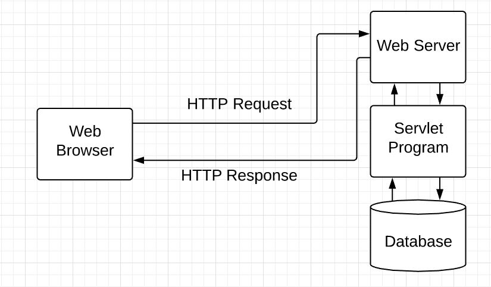
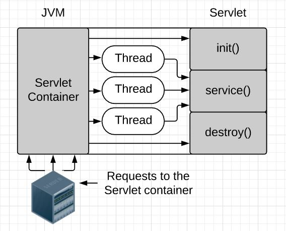
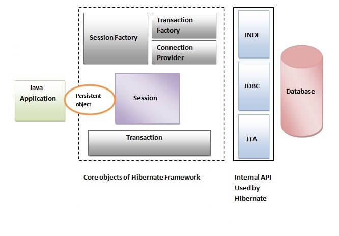
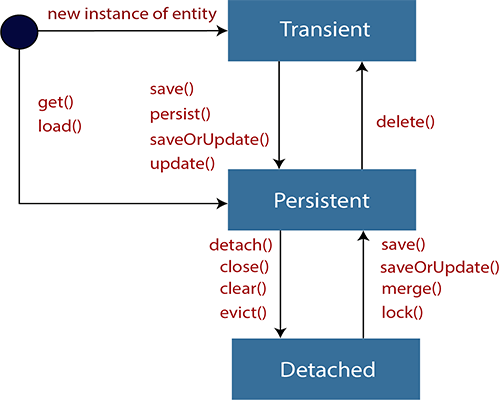
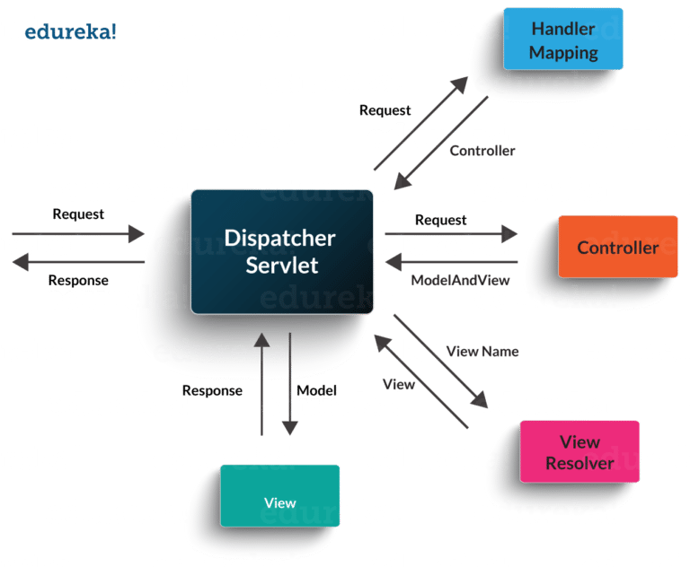
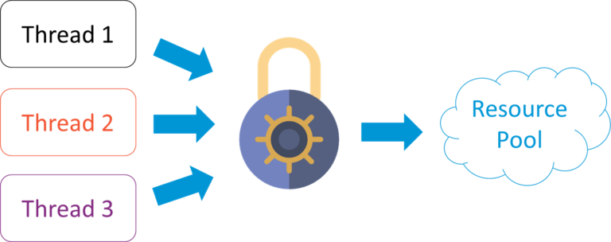

Java is the high-level, object-oriented, robust, secure programming language, platform-independent, high performance, Multithreaded, and portable programming language.
What is Java?
Classloader is a subsystem of JVM which is used to load class files. Whenever we run the java program, it is loaded first by the classloader. There are three built-in classloaders in Java: Bootstrap, Extension, System/Application.
What is classloader?
Feature
Description
Object Oriented
Java can be easily extended since it is based on the Object model
Platform Independent
Java is compiled into platform independent byte code, which is interpreted by the JVM
Simple
Java is designed to be easy to learn
Secure
With Java's secure feature it enables to develop virus-free, tamper-free systems. Authentication techniques are based on public-key encryption
Architecture-neutral
Java compiler generates an architecture-neutral object file format known as byte code, so the users installed JVM will execute the code
Portable
Being architecture-neutral and having no implementation dependent aspects of the specification makes Java portable
Robust
Java makes an effort to eliminate error-prone situations by emphasizing mainly on compile time error checking and runtime checking
Multithreaded
With Java's multithreaded feature it is possible to write programs that can perform many tasks simultaneously. This design feature allows the developers to construct interactive applications that can run smoothly
Interpreted
Java byte code is translated on the fly to native machine instructions and is not stored anywhere. The development process is more rapid and analytical since the linking is an incremental and light-weight process
High Performance
With the use of Just-In-Time compilers, Java enables high performance
Distributed
Java is designed for the distributed environment of the internet
Dynamic
Java is considered to be more dynamic than C or C++ since it is designed to adapt to an evolving environment. Java programs can carry an extensive amount of run-time information that can be used to verify and resolve accesses to objects at run-time
Running your Java Program
Source Code is given to the compiler which Generates Byte code (.class files) which are given to the JVM (interprets the byte code) and the program executes.
Anytime you want to run your program you need to have your JRE
JRE (Java Runtime Environment)
Provides the libraries, the JVM, and other components to run applications written in Java. In short the JRE enables Java bytecode to run on any platform.
JDK (Java Development Kit)
Contains everything that is in the JRE as well as the Compilers and Debuggers necessary for developing Java Applications. In short the JRE is used to develop Java applications/programs.
JVM (Java Virtual Machine)
Sits in between the compiler and the CPU and interprets the bytecode into readable machine language for the CPU. In short the JVM Interpret the byte codes and performs the execution on it.
Byte Code: When we compile the Java program it generates byte code (.class files), which can be interpreted by the JVM.
JVM
The Java Virtual Machine is an abstract layer between a Java program and the platform that Java program is running on.
JVM is platform dependent and available for specific platforms (Operating Systems).
JVM cannot understand Java (source code). It can only understand the bytecode (.class file) we get from compiling our .java source file.
The compiled bytecode doesn't run on CPU directly, JVM sits in between and interprets the bytecode into readable machine language for the CPU.
JRE
Provides the libraries, the JVM, and other components to run applications written in Java.
Enables Java bytecode to run on any platform.
JRE enables Java bytecode to run on any platform. Bytecodes are interpreted by the JVM, at runtime classes found in the JRE when they need to perform actions, they cannot do by themselves.
Platform Dependent
JDK
A superset of the JRE, containing everything that is in the JRE, it also includes development tools such as the compilers and debuggers necessary for developing java applications.
Platform Dependent
Programming Paradigms
Process-Oriented Model: A program is a series of linear steps (that is, code).
Characterized as code acting on data.
Includes Procedural Languages such as C.
To manage increasing complexity, the second approach was conceived
Object-Oriented Programming: Organizes a program around its data (that is, objects) and a set of well-defined interfaces to that data.
Characterized as data controlling access to code.
By switching the controlling entity to data, you can achieve several organizational benefits.
OOP is a programming language model in which programs are organized around data, or objects, rather than functions and logic.
OOP helps us reduce complexity, promote code reuse, and prevent code redundancies.
The Java Programming Language Platforms
Java Platform, Standard Edition (Java SE)
Java Platform, Enterprise Edition (Java EE)
Java Platform, Micro Edition (Java ME)
JavaFX
All of the above platforms consist of a Java Virtual Machine (JVM) and an application programming interface (API).
The Java Virtual Machine is a program, for a particular hardware and software platform, that runs Java technology applications.
An API is a collection of interfaces components that you can use to create other software components or applications.
Java SE (Java Standard Edition)
This is the core Java programming platform. It contains all of the libraries and APIs that any Java programmer should learn (java.lang, java.io, java.math, java.net, java.util, etc…).When most people think of the Java programming language, they think of the Java SE API. Java SE’s API provides the core functionality of the Java programming language. It defines everything from the basic types and objects of the Java programming language to high-level classes that are used for networking, security, database access, graphical user interface (GUI) development, and XML parsing.
In addition to the core API, the Java SE platform consists of a virtual machine, development tools, deployment technologies, and other class libraries and toolkits commonly used in Java technology applications.
Java EE (Java Enterprise Edition)
The Java EE platform is built on top of the Java SE platform. The Java EE platform provides an API and runtime environment for developing and running large-scale, multi-tiered, scalable, reliable, and secure network applications.
Java ME (Java Micro Edition)
The Java ME platform provides an API and a small-footprint virtual machine for running Java programming language applications on small devices, like mobile phones. The API is a subset of the Java SE API, along with special class libraries useful for small device application development. Java ME applications are often clients of Java EE platform services.
JavaFX
JavaFX is a platform for creating rich internet applications using a lightweight user-interface API. JavaFX applications use hardware-accelerated graphics and media engines to take advantage of higher-performance clients and a modern look-and-feel as well as high-level APIs for connecting to networked data sources. JavaFX applications may be clients of Java EE platform services.
Packages: Essentially a grouping of classes.
Used to segregate the code for easy import and export.
Object Oriented Programming Principles
Abstraction
Data abstraction is the process of hiding certain details and showing only essential information to the user. Abstraction can be achieved with either abstract classes or interfaces.
Managing the complexity of a system through the use of hierarchical classifications.
On a high level we are hiding the functionality of the underlying systems.
From the outside, a car is a single object, once inside, you see that the car consists of several subsystems: steering, brakes, sounds system, and so on.
People do not think of a car as a set of thousands of parts, but a well defined object with its own unique behaviour.
People can ignore the details of how the engine, and braking systems work and instead utilize the object as a whole.
Example:
Thinking of it as a folder structure on your operating system: Car would be the first folder and inside you would see folders for all of its subsystems inside the Sound System folder their could be folders for the Radio, CD player, and MP3 Systems and so on
Encapsulation
The mechanism that binds together code and the data it manipulates, and keeps both safe from outside interference and misuse.
In Java, the basis of encapsulation is the class which defines the structure and behaviour that will be shared by a set of objects.
"A class is a logical construct, an object has physical reality"
Example:
A protective wrapper that prevents the code and data from being arbitrarily accessed by other code defined outside the wrapper.
The gear-shift lever is a well-defined interface to the transmission in your vehicle, you can't affect the transmission by using the turn signal or windshield wipers.
Inheritance
The process by which one object acquires the properties of another object.
Useful when you are not changing the implementations, but the definitions.
The object can inherit its general properties from its parent.
A deeply inherited subclass inherits all of the attributes form each of its ancestors in the class hierarchy.
Inheritance interacts with encapsulation as well. If a given class encapsulates some attributes, then any subclass will have the same attributes plus any that it adds as part of its specialization.
Multiple Inheritance
A class can inherit properties of more than one parent class. However, there is a problem associated with this known as the "Diamond Problem".
The Diamond Problem
When more than one parent class has a method of the same name the compiler cannot determine which super classes' method to use; causing a compilation error.
Tight Coupling
Tight Coupling: this is bad because, changing something in class A could change the functionality of class B which is extending it, and returning incorrect values. This is making the system rigged and no longer extensible.
Example:
A golden retriever is part of the classification dog, which is in turn a part of the mammal class, which is under the larger class animal.
Polymorphism
A feature that allows one interface to be used for a general class of actions.
The specific action is determined by the exact nature of the situation.
This helps reduce complexity by allowing the same interface to be used to specify a general class of actions.
It is the compiler's job to select the specific action (that is, method) as it applies to each situation.
Example:
A dog's sense of smell is polymorphic:
If the dog smells a cat, it will bark and run after it.
If the dog smells food, it will salivate and run to its bowl.
Two Types:
Static/Compile-Time Polymorphism:
Specifying different forms during compile time.
Method Overloading
Dynamic/Runtime Polymorphism:
Method Overriding
Dynamic Method Dispatch:
The mechanism by which a call to an overridden method is resolved at runtime rather than compile time.
This is how Java implements runtime polymorphism.
Polymorphism, Encapsulation, and Inheritance Working Together:
A well-designed hierarchy of classes is the basis for reusing the code in which you have invested time and effort developing and testing.
Encapsulation allows you to migrate your implementations over time without breaking the code that depends on the public interface of your classes.
Polymorphism allows you to create clean, sensible, readable, and resilient code.
// Allocate a 4 by 5 array and assign it to twoD
int twoD[][] = new int [4][5];
When you allocate the memory for a multi-dimentional array, you need only specify the memory for the first (leftmost) dimension. You can allocate the memory for the remaining dimensions separately.
int twoD[][] = new int[4][];
twoD[0] = new int[5];
twoD[1] = new int[5];
twoD[2] = new int[5];
twoD[3] = new int[5];
Strings
Strings are used for storing text. A String variable contains a collection of characters surrounded by double quotes
String greeting = "Hello";
String Length
A String in Java is actually an object, which contain methods that can perform certain operations on strings. For example, the length of a string can be found with the length() method.
String Methods
Method
Description
Return Type
charAt()
Returns the character at the specified index (position)
char
codePointAt()
Returns the Unicode of the character at the specified index
int
codePointBefore()
Returns the Unicode of the character before the specified index
int
codePointCount()
Returns the Unicode in the specified text range of this String
int
compareTo()
Compares two strings lexicographically
int
compareToIgnoreCase()
Compares two strings lexicographically, ignoring case differences
int
concat()
Appends a string to the end of another string
String
contains()
Checks whether a string contains a sequence of characters
boolean
contentEquals()
Checks whether a string contains the exact same sequence of characters of the specified CharSequence or StringBuffer
boolean
copyValueOf()
Returns a String that represents the characters of the character array
String
endsWith()
Checks whether a string ends with the specified character(s)
boolean
equals()
Compares two strings. Returns true if the strings are equal, and false if not
boolean
equalsIgnoreCase()
Compares two strings, ignoring case considerations
boolean
format()
Returns a formatted string using the specified locale, format string, and arguments
String
getBytes()
Encodes this String into a sequence of bytes using the named charset, storing the result into a new byte array
byte[]
getChars()
Copies characters from a string to an array of chars
void
hashCode()
Returns the hash code of a string
int
indexOf()
Returns the position of the first found occurrence of specified characters in a string
int
intern()
Returns the index within this string of the first occurrence of the specified character, starting the search at the specified index
String
isEmpty()
Checks whether a string is empty or not
boolean
lastIndexOf()
Returns the position of the last found occurrence of specified characters in a string
int
length()
Returns the length of a specified string
int
matches()
Searches a string for a match against a regular expression, and returns the matches
boolean
offsetByCodePoints()
Returns the index within this String that is offset from the given index by codePointOffset code points
int
regionMatches()
Tests if two string regions are equal
boolean
replace()
Searches a string for a specified value, and returns a new string where the specified values are replaced
String
replaceFirst()
Replaces the first occurrence of a substring that matches the given regular expression with the given replacement
String
replaceAll()
Replaces each substring of this string that matches the given regular expression with the given replacement
String
split()
Splits a string into an array of substrings
String[]
startsWith()
Checks whether a string starts with specified characters
boolean
subSequence()
Returns a new character sequence that is a subsequence of this sequence
CharSequence
substring()
Extracts the characters from a string, beginning at a specified start position, and through the specified number of character
String
toCharArray()
Converts this string to a new character array
char[]
toLowerCase()
Converts a string to lower case letters
String
toString()
Returns the value of a String object
String
toUpperCase()
Converts a string to upper case letters
String
trim()
Removes whitespace from both ends of a string
String
valueOf()
Returns the primitive value of a String object
String
Java counts positions from zero. 0 is the first position in a string, 1 is the second, 2 is the third ..
concat() Method
The Java String concat() method concatenates one string to the end of another string. This method returns a string with the value of the string passed into the method, appended to the end of the string.
String s = "Java";
s = s.concat("! is the best.");
System.out.println(s);
Output:
Java! is the best.
+ Operator
+ operator is used to concatenate strings on either side.
String s1 = "Java";
String s2 = "! is the best.";
String s3 = s1 + s2;
System.out.println(s3);
Output:
Java! is the best.
Difference between concat() and + operator
Although concat() and + operator are both used for concatenation of strings, but there are some differences between them:
Points
concat() Method
+ Operator
Definition
A concat() method is method to combine two strings .
+ operator used to concatenate any number of strings.
Number of arguments
concat() method takes only one argument of string and concat it with other string.
+ operator takes any number of arguments and concatenates all the strings.
Type of arguments
strong>concat() method takes only string arguments, if there is any other type is given in arguments then it will raise an error.
+ operator takes any type and converts to string type and then concatenates the strings.
concat() method throws NullPointer Exception when string is concatenated with null
+ operator did not raise any Exception when the string is concatenated with null.
Creates a new String object
concat() method takes concatenates two strings and return new string object only string length is greater than 0, otherwise it returns same object.
+ operator creates a new string object every time irrespective of length of string.
NullPointer Exception
In concat() method raises NullPointer Exception when string is concatenated with null .
+ operator concatenates string with without any error.
Performance
concat() method is better than + operator because it creates a new object only when the string length is greater than zero(0) but + operator always a creates a new string irrespective of length of string.
+ operator always a creates a new string irrespective of length of string therefore it takes more memory.
Special Characters
Because strings must be written within quotes, Java will misunderstand this string, and generate an error
String txt = "We are the so-called "Vikings" from the north.";
To avoid this problem we have the backslash excape character. (\)
Escape Character
Result
Description
\'
'
Single quote
\"
"
Double quote
\\
\
Backslash
\n
New Line
Text after \n will print on the next line
\r
Carriage Return
Text after \r will print on the next line
\t
Tab
Insert 4 spaces
\b
Backspace
Delete a character
\f
Form Feed
Form Feed
Adding Numbers and Strings
If you add a number and a string, the result will be a string concatenation.
String x = "10";
int y = 20;
String z = x + y; // z will be 1020 (a String)
Access Modifiers
Allow the programmer to control the visibility of class members.
Class level
Without a modifier a class is assumed package-private and visible only within its own package.
Public: class is visible to all classes everywhere.
Member level
Public
That member may be accessed by any code within its package.
Example: Your name, birthday, things that anyone can access.
Private
That member can only be accessed by other members of its class, unless a public interface is provided (getters/setters).
Example: Only you have access to this information.
Protected
Can be accessed within the same package or classes that subclass your class directly from other packages.
Example: Parents and relatives can access.
No Modifier (default)
Can be accessed from anywhere within the same package.
Example: People with whom you live can access.
Example a 10 year old could understand: Cookies left on the counter are for anyone and cookies in the cookie jar are private/protected.
Methods
A method is a block of code which only runs when it is called.
You can pass data, known as parameters, into a method.
Methods are used to perform certain actions, and they are also known as functions.
Why use methods? To reuse code: define the code once, and use it many times.
Create a Method
A method must be declared within a class. It is defined with the name of the method, followed by parentheses (). Java provides some pre-defined methods, such as System.out.println(), but you can also create your own methods to perform certain actions
static
the method belongs to the class and not an object.
void
The method does not have a return value.
Call a Method
To call a method in Java, write the method's name followed by two parentheses () and a semicolon;
Method Parameters
Information can be passed to functions as parameter. Parameters act as variables inside the method.
Parameters are specified after the method name, inside the parentheses. You can add as many parameters as you want, just separate them with a comma.
Return Values
If you want the method to return a value, you can use a primitive data type (such as int, char, etc.) instead of void, and use the return keyword inside the method.
static int myMethod(int x) {
return 5 + x;
}
Finalize Method
Method which will be called during garbage collection process before data is removed from memory.
Static Method
Methods that are part of the class and not the instance, so they can be called without creating a new object.
Default Method
Lets you define a default implementation for an interface method.
Abstract Method
You can require that certain methods be overridden by subclasses by specifying the abstract type modifier.
Abstract Method
Can only be used in an abstract class, and it does not have a body. The body is provided by the subclass (inherited from).
general form: abstract type name (parameter-list);
Static Block
Static Block: Like a static method, but without a name.
Called whenever the class is being loaded by the JVM and executed even before the main method.
Executed once when the class is being loaded, we cannot call static blocks.
Not part of the object, but part of the class.
class Test {
static int i;
// start of static block
static {
i = 10;
System.out.println("static block called");
}
// end of static block
}
class Main {
public static void main(String args[]) {
// Although we don't have an object of Test, static block is
// called because i is being accessed in the following statement.
System.out.println(Test.i);
}
}
Example of static blocks being called before constructors:
class Test {
static int i;
static {
i = 10;
System.out.println("static block called ");
}
class Main {
public static void main(String args[]) {
// Although we have two objects, static block is executed only once.
Test t1 = new Test();
Test t2 = new Test();
}
}
Java Class Methods
public class MyClass {
// Static method
static void myStaticMethod() {
System.out.println("Static methods can be called without creating objects");
}
// Public method
public void myPublicMethod() {
System.out.println("Public methods must be called by creating objects");
}
// Main method
public static void main(String[] args) {
myStaticMethod(); // Call the static method
// myPublicMethod(); This would compile an error
MyClass myObj = new MyClass(); // Create an object of MyClass
myObj.myPublicMethod(); // Call the public method on the object
}
}
The dot (.) is used to access the object's attributes and methods.
To call a method in Java, write the method name followed by a set of parentheses (), followed by a semicolon (;).
A class must have a matching filename (MyClass and MyClass.java).
Using Multiple Classes
public class Car {
public void fullThrottle() {
System.out.println("The car is going as fast as it can!");
}
public void speed(int maxSpeed) {
System.out.println("Max speed is: " + maxSpeed);
}
}
class OtherClass {
public static void main(String[] args) {
Car myCar = new Car(); // Create a myCar object
myCar.fullThrottle(); // Call the fullThrottle() method
myCar.speed(200); // Call the speed() method
}
}
Output:
The car is going as fast as it can!
Max speed is: 200
Constructors
In Java, constructor refers to a block of code which is used to initialize an object. It must have the same name as that of the class. Also, it has no return type and it is automatically called when an object is created.
There are two types of constructors:
Default Constructor: In Java, a default constructor is the one which does not take any inputs. In other words, default constructors are the no argument constructors which will be created by default in case you no other constructor is defined by the user. Its main purpose is to initialize the instance variables with the default values. Also, it is majorly used for object creation.
Parameterized Constructor: The parameterized constructor in Java, is the constructor which is capable of initializing the instance variables with the provided values. In other words, the constructors which take the arguments are called parameterized constructors.
What is constructor overloading in Java?
In Java, constructor overloading is a technique of adding any number of constructors to a class each having a different parameter list. The compiler uses the number of parameters and their types in the list to differentiate the overloaded constructors.
// Create a class
public class MyClass {
int x; // Create a class attribute
// Create a class constructor for MyClass
public MyClass() {
x = 5; // Set the initial value for the class attribute x
}
// Parameterized Constructor
public MyClass(int y) {
x = y;
}
public static void main(String[] args) {
// Create an object of class MyClass (This will call the constructor)
MyClass myObj1 = new MyClass();
// Create an object of class MyClass (This will call the parameterized constructor)
MyClass myObj2 = new MyClass(5);
// Print the value of x
System.out.println(myObj1.x);
System.out.println(myObj2.x);
}
}
Output:
5
5
Private Constructors
If a constructor is made private, then it can only be accessed inside the class.
There are various scenarios where we can use private constructors. The major ones are
Internal Constructor chaining
Singleton class design pattern
Copy Constructor
Copy Constructor in java class is a special type of constructor that takes the same class as an argument. Copy constructor is used to provide a copy of the specified object.
Copy constructor is an easy alternative to java cloning mechanism.
Copy constructor is helpful when we want to copy an object that is heavy to instantiate.
// Create a class
public class MyClass {
int x; // Create a class attribute
// Create a class constructor for MyClass
public MyClass() {
x = 5; // Set the initial value for the class attribute x
}
// Parameterized Constructor
public MyClass(int y) {
x = y;
}
// Copy Constructor
public MyClass(MyClass m) {
x = m.x
}
public static void main(String[] args) {
// Create an object of class MyClass (This will call the constructor)
MyClass myObj1 = new MyClass();
// Create an object of class MyClass (This will call the parameterized constructor)
MyClass myObj2 = new MyClass(5);
// Create an object of class MyClass (This will use the copy constructor)
MyClass myObj3 = new MyClass(myObj2);
// Print the value of x
System.out.println(myObj1.x);
System.out.println(myObj2.x);
System.out.println(myObj3.x);
}
}
Output:
5
5
5
Constructor Chaining
Constructor chaining can be done in two ways:
Within same class: It can be done using this() keyword for constructors in same class
From base class: by using super() keyword to call constructor from the base class.
Rules of constructor chaining:
The this() expression should always be the first line of the constructor.
There should be at-least be one constructor without the this() keyword (constructor 3 in above example).
Constructor chaining can be achieved in any order.
Constructor Chaining using this() Keyword
class Temp {
// default constructor 1
// default constructor will call another constructor
// using this keyword from same class
Calling parameterized constructor of base
Calling parameterized constructor of derived
Init Block
When we want certain common resources to be executed with every constructor we can put the code in the init block. Init block is always executed before any constructor, whenever a constructor is used for creating a new object.
class Temp {
// block to be executed before any constructor.
{
System.out.println("init block");
}
// constructor with one argument.
Temp(int x) {
System.out.println(x);
}
public static void main(String args[]) {
// Object creation by calling no-argument constructor.
new Temp();
// Object creation by calling parameterized constructor with one parameter.
new Temp(10);
}
}
Output:
init block
default
init block
10
Why Constructors are not inherited in Java
Constructors are special and have same name as class name. So if constructors were inherited in child class then child class would contain a parent class constructor which is against the constraint that constructor should have same name as class name.
class Parent {
public Parent() {
}
public void print() {
}
}
public class Child extends Parent {
public Parent() {
}
public void print() {
}
public static void main(String[] args) {
Child c1 = new Child(); // allowed
Child c2 = new Parent(); // not allowed
}
}
Inheritance and Constructors
In Java, constructor of base class with no argument gets automatically called in derived class constructor.
But, if we want to call parameterized contructor of base class, then we can call it using super(). The point to note is base class constructor call must be the first line in derived class constructor.
class Base {
int x;
Base(int x) {
this.x = x;
}
}
class Derived extends Base {
int y;
Derived(int x, int y) {
super(x);
this.y = y;
}
void Display() {
System.out.println("x = " + x + ", y = " + y);
}
}
public class Main {
public static void main(String[] args) {
Derived d = new Derived(10, 20);
d.Display();
}
}
Output:
x = 10, y = 20
Java has a set of keywords that are reserved words that cannot be used as variables, methods, classes, or any other identifiers:
Keyword
Description
abstract
A non-access modifier. Used for classes and methods: An abstract class cannot be used to create objects (to access it, it must be inherited from another class). An abstract method can only be used in an abstract class, and it does not have a body. The body is provided by the subclass (inherited from)
assert
For debugging
boolean
A data type that can only store true and false values
break
Breaks out of a loop or a switch block
byte
A data type that can store whole numbers from -128 and 127
case
Marks a block of code in switch statements
catch
Catches exceptions generated by try statements
char
A data type that is used to store a single character
class
Defines a class
continue
Continues to the next iteration of a loop
const
Defines a constant. (use final instead)
Keyword
Description
default
Specifies the default block of code in a switch statement
do
Used together with while to create a do-while loop
double
A data type that can store whole numbers from 1.7e−308 to 1.7e+038
else
Used in conditional statements
enum
Declares an enumerated (unchangeable) type
exports
Exports a package with a module. New in Java 9
extends
Extends a class (indicates that a class is inherited from another class)
final
A non-access modifier used for classes, attributes and methods, which makes them non-changeable (impossible to inherit or override)
Declaring a field as final prevents its contents from being modified after it has been initialized.
Its value can also be assigned within a constructor.
Making a class final means you cannot make sub-classes to it (extend it).
Making a method final means that sub-classes cannot override that method.
finally
Used with exceptions, a block of code that will be executed no matter if there is an exception or not
float
A data type that can store whole numbers from 3.4e−038 to 3.4e+038
for
Create a for loop
Keyword
Description
goto
Not in use, and has no function
if
Makes a conditional statement
implements
Implements an interface
import
Used to import a package, class or interface.
General Form: import pkg1.[pkg2].(classname|*);
instanceof
Checks whether an object is an instance of a specific class or an interface
int
A data type that can store whole numbers from -2147483648 to 2147483647
interface
Used to declare a special type of class that only contains abstract methods
Can be used to fully abstract a class' interface from its implementation.
long
A data type that can store whole numbers from -9223372036854775808 to 9223372036854775808
module
Declares a module. New in Java 9
native
Specifies that a method is not implemented in the same Java source file (but in another language)
new
Creates new objects
package
Declares a package
private
An access modifier used for attributes, methods and constructors, making them only accessible within the declared class
protected
An access modifier used for attributes, methods and constructors, making them accessible in the same package and subclasses
public
An access modifier used for classes, attributes, methods and constructors, making them accessible by any other class
Keyword
Description
requires
Specifies required libraries inside a module. New in Java 9
return
Finished the execution of a method, and can be used to return a value from a method
short
A data type that can store whole numbers from -32768 to 32767
static
Allows a method to be called without having to instantiate a particular instance of the class.
Necessary for main() which is called by the Java Virtual Machine before any objects are made.
strictfp
Restrict the precision and rounding of floating point calculations
super
Refers to superclass (parent) objects
switch
Selects one of many code blocks to be executed
synchronized
A non-access modifier, which specifies that methods can only be accessed by one thread at a time
this
Refers to the current object in a method or constructor
throw
Creates a custom error
throws
Indicates what exceptions may be thrown by a method
transient
A non-access modifier, which specifies that an attribute is not part of an object's persistent state
try
Creates a try...catch statement
Keyword
Description
var
Declares a variable. New in Java 10
void
Tells the compiler that the method does not return a value.
volatile
Indicates that an attribute is not cached thread-locally, and is always read from the "main memory"
while
Creates a while loop
true, false, and null are not keywords, but they are literals and reserved words that cannot be used as identifiers.
Classes
A template for an object, also known as a "blueprint"
Everything in Java is associated with classes and objects, along with its attributes and methods. For example: in real life, a car is an object. The car has attributes, such as weight and color, and methods, such as drive and brake.
General form:
class className { type instance-variable1; }
Create a Class
To create a class, use the keyword class.
Create an Object
In Java, an object is created from a class. To create an object, specify the class name, followed by the object name and use the keyword new.
public class MyClass {
int x = 5;
public static void main(String[] args) {
MyClass myObj = new MyClass();
System.out.println(myObj.x);
}
}
Using Multiple Classes
You can also create an object of a class and access it in another class. This is often used for better organization of classes (one class has all the attributes and methods, while the other class holds the main() method (code to be executed)).
Remember that the name of the java file should match the class name.
public class MyClass {
int x = 5;
}
class OtherClass {
public static void main(String[] args) {
MyClass myObj = new MyClass();
System.out.println(myObj.x);
}
}
Members: "The methods and variables defined within a class"
Class Attributes
Class attributes are variables within a class
Accessing Attributes
You can access attributes by creating an object of the class, and by using the dot syntax (.)
public class MyClass {
int x = 5;
public static void main(String[] args) {
MyClass myObj = new MyClass();
System.out.println(myObj.x);
}
}
Modify Attributes
You can also modify or override existing attribute values.
If you don't want the ability to override existing values, declare the attribute as final
The final keyword is useful when you want a variable to always store the same value, like PI (3.14159...).
The final keyword is called a "modifier".
Multiple Objects
If you create multiple objects of one class, you can change the attribute values in one object, without affecting the attribute values in the other.
Multiple Attributes
You can specify as many attributes as you want.
Final Class
Making a class final means that class can't be extended.
Abstract Class
A class where we won't have a full implementations (not a blueprint).
A restricted class that cannot be used to create objects (to access it, it must be inherited from another class).
Concrete Class
Will have a full implementation (a blueprint).
Implementation
Methods defined and implemented (have a body).
Singleton Class
As the name implies, a class is said to be singleton if it limits the number of objects of that class to one.
We can’t have more than a single object for such classes.
Singleton classes are employed extensively in concepts like Networking and Database Connectivity.
Java Class Methods
public class MyClass {
// Static method
static void myStaticMethod() {
System.out.println("Static methods can be called without creating objects");
}
// Public method
public void myPublicMethod() {
System.out.println("Public methods must be called by creating objects");
}
// Main method
public static void main(String[] args) {
myStaticMethod(); // Call the static method
// myPublicMethod(); This would compile an error
MyClass myObj = new MyClass(); // Create an object of MyClass
myObj.myPublicMethod(); // Call the public method on the object
}
}
The dot (.) is used to access the object's attributes and methods.
To call a method in Java, write the method name followed by a set of parentheses (), followed by a semicolon (;).
A class must have a matching filename (MyClass and MyClass.java).
Using Multiple Classes
public class Car {
public void fullThrottle() {
System.out.println("The car is going as fast as it can!");
}
public void speed(int maxSpeed) {
System.out.println("Max speed is: " + maxSpeed);
}
}
class OtherClass {
public static void main(String[] args) {
Car myCar = new Car(); // Create a myCar object
myCar.fullThrottle(); // Call the fullThrottle() method
myCar.speed(200); // Call the speed() method
}
}
Output:
The car is going as fast as it can!
Max speed is: 200
Java Inner Classes
In Java, it is also possible to nest classes (a class within a class). The purpose of nested classes is to group classes that belong together, which makes your code more readable and maintainable.
To access the inner class, create an object of the outer class, and then create an object of the inner class
class OuterClass {
int x = 10;
class InnerClass {
int y = 5;
}
}
public class MyMainClass {
public static void main(String[] args) {
OuterClass myOuter = new OuterClass();
OuterClass.InnerClass myInner = myOuter.new InnerClass();
System.out.println(myInner.y + myOuter.x);
}
}
Private Inner Class
Unlike a "regular" class, an inner class can be private or protected. If you don't want outside objects to access the inner class, declare the class as private
Static Inner Class
An inner class can also be static, which means that you can access it without creating an object of the outer class.
Just like static attributes and methods, a static inner class does not have access to members of the outer class.
Access Outer Class From Inner Class
One advantage of inner classes, is that they can access attributes and methods of the outer class.
Interfaces
An interface is a completely "abstract class" that is used to group related methods with empty bodies.
Using Interfaces you can specify what a class must do, but not how it does it.
A class implements an interface, thereby inheriting the abstract methods of the interface.
Along with abstract methods, an interface may also contain constants, default methods, static methods, and nested types. Method bodies exist only for default methods and static methods.
Unless the class that implements the interface is abstract, all the methods of the interface need to be defined in the class.
An interface is implicitly abstract. You do not need to use the abstract keyword while declaring an interface.
Each method in an interface is also implicitly abstract, so the abstract keyword is not needed.
Methods in an interface are implicitly public.
Similarities with a Class
An interface can contain any number of methods.
An interface is written in a file with a .java extension, with the name of the interface matching the name of the file.
The byte code of an interface appears in a .class file.
Interfaces appear in packages, and their corresponding bytecode file must be in a directory structure that matches the package name.
Differences from a Class
You cannot instantiate an interface.
An interface does not contain any constructors.
All of the methods in an interface are abstract.
An interface cannot contain instance fields. The only fields that can appear in an interface must be declared both static and final.
An interface is not extended by a class; it is implemented by a class.
An interface can extend multiple interfaces.
Declaring Interfaces
The interface keyword is used to declare an interface.
Naming Convention for Interfaces: Start with a capital "I" followed by the name of the interface "Player".
interface IPlayer { final int id = 10; int move(); }
public interface NameOfInterface {
// Any number of final, static fields
// Any number of abstract method declarations
}
To access the interface methods, the interface must be "implemented" by another class with the implements keyword (instead of extends).
The body of the interface is provided by the implementing class
A class uses the implements keyword to implement an interface. The implements keyword appears in the class declaration following the extends portion of the declaration.
// Interface
interface IAnimal {
public void animalSound(); // interface method (does not have a body)
public void sleep(); // interface method (does not have a body)
}
// Pig "implements" the Animal interface
class Pig implements IAnimal {
public void animalSound() {
// The body of animalSound() is provided here
System.out.println("The pig says: wee wee");
}
public void sleep() {
// The body of sleep() is provided here
System.out.println("Zzz");
}
}
Overriding Interface Methods
Checked exceptions should not be declared on implementation methods other than the ones declared by the interface method or subclasses of those declared by the interface method.
The signature of the interface method and the same return type or subtype should be maintained when overriding the methods.
An implementation class itself can be abstract and if so, interface methods need not be implemented.
Implementing Interfaces
A class can implement more than one interface at a time.
A class can extend only one class, but implement many interfaces.
An interface can extend another interface, in a similar way as a class can extend another class.
Extending Interfaces
An interface can extend another interface in the same way that a class can extend another class. The extends keyword is used to extend an interface, and the child interface inherits the methods of the parent interface.
Extending Multiple Interfaces
A Java class can only extend one parent class. Multiple inheritance is not allowed. Interfaces are not classes, however, and an interface can extend more than one parent interface.
The extends keyword is used once, and the parent interfaces are declared in a comma-separated list.
Notes on Interfaces:
Like abstract classes, interfaces cannot be used to create objects (in the example above, it is not possible to create an "Animal" object in the MyMainClass)
Interface methods do not have a body - the body is provided by the "implements" class
On implementation of an interface, you must override all of its methods
Interface methods are by default abstract and public
Interface attributes are by default public, static and final
An interface cannot contain a constructor (as it cannot be used to create objects)
Why and when to use Interfaces
To achieve security - hide certain details and only show the important details of an object (interface).
Java does not support "multiple inheritance" (a class can only inherit from one superclass). However, it can be achieved with interfaces, because the class can implement multiple interfaces. Note: To implement multiple interfaces, separate them with a comma.
class DemoClass implements FirstInterface, SecondInterface {
Functional Interfaces
A functional interface is an interface that specifies only one abstract method.
An interface method is abstract only if it does not specify a default implementation.
Using Default Methods however, it is possible to specify the behaviour for a method declared in an interface.
Non-default interface methods are implicitly abstract, so there is no need to use the abstract modifier (although you can specify it, if you like).
interface INumber {
double getValue();
}
Marker Interface
It is an empty interface (no field or methods). Examples of marker interface are Serializable, Clonnable and Remote interface. All these interfaces are empty interfaces.
Abstract class: A class where we won't have a full implementations (not a blueprint).
Interface: Using Interfaces you can specify what a class must do, but not how it does it.
Major Difference
Abstract Classes can have partial implementations.
Type of methods: Interface can have only abstract methods. Abstract class can have abstract and non-abstract methods. From Java 8, it can have default and static methods also.
Final Variables: Variables declared in a Java interface are by default final. An abstract class may contain non-final variables.
Type of variables: Abstract class can have final, non-final, static and non-static variables. Interface has only static and final variables.
Implementation: Abstract class can provide the implementation of interface. Interface can’t provide the implementation of abstract class.
Inheritance vs Abstraction: A Java interface can be implemented using keyword “implements” and abstract class can be extended using keyword “extends”.
Multiple implementation: An interface can extend another Java interface only, an abstract class can extend another Java class and implement multiple Java interfaces.
Accessibility of Data Members: Members of a Java interface are public by default. A Java abstract class can have class members like private, protected, etc.
Consider using abstract classes if any of these statements apply to your situation:
In java application, there are some related classes that need to share some lines of code then you can put these lines of code within abstract class and this abstract class should be extended by all these related classes.
You can define non-static or non-final field(s) in abstract class, so that via a method you can access and modify the state of Object to which they belong.
You can expect that the classes that extend an abstract class have many common methods or fields, or require access modifiers other than public (such as protected and private).
Consider using interfaces if any of these statements apply to your situation:
It is total abstraction, All methods declared within an interface must be implemented by the class(es) that implements this interface.
A class can implement more than one interface. It is called multiple inheritance.
You want to specify the behavior of a particular data type, but not concerned about who implements its behavior.
Exception Handling
Errors:
Errors are the conditions which cannot get recovered by any handling techniques and cause the program to terminate at runtime.
Exceptions:
Is something that causes an abnormal flow in your program and it can no longer continue.
Abnormal Flow Example: You wrote a method to divide two number, but it was dividing by zero, so it throws an exception.
Exceptions are the conditions that occur at runtime and may cause the termination of the program. But they are recoverable using try, catch and throw keywords.
Exceptions are abnormal conditions that arise in a code sequence at run time.
Checked & Unchecked
Checked Exceptions: are the exceptions that are checked at compile time. If some code within a method throws a checked exception, then the method must either handle the exception or it must specify the exception using throws keyword.
Unchecked: are the exceptions that are not checked at compiled time.
Checked (Compile-time) Exceptions Defined in java.lang
Exception
Meaning
ClassNotFoundException
Class not found.
CloneNotSupportedException
Attempt to clone an object that does not implement the Cloneable interface.
IllegalAccessException
Access to a class is denied.
InstantiationException
Attempt to create an object of an abstract class or interface.
InterruptedException
One thread has been interrupted by another thread.
NoSuchFieldException
A requested field does not exist.
NoSuchMethodException
A requested method does not exist.
ReflectiveOperationException
Superclass of reflection-related exceptions.
Unchecked (Runtime) Exception Defined in java.lang
Exception
Meaning
ArithmeticException
Arithmetic error, such as divide-by-zero.
ArrayIndexOutOfBoundsException
Array index is out-of-bounds.
ArrayStoreException
Assignment to an array element of an incompatible type.
ClassCastException
Invalid cast.
EnumConstantNotPresentException
An attempt is made to use an undefined enumeration value.
IllegalArgumentException
Illegal argument used to invoke a method.
IllegalMonitorStateException
Illegal monitor operation, such as waiting on an unlocked thread.
IllegalStateException
Environment or application is in incorrect state.
IllegalThreadStateException
Requested operation not compatible with current thread state.
IndexOutOfBoundsException
Some type of index is out-of-bounds.
NegativeArraySizeException
Array created with a negative size.
NullPointerException
Invalid use of a null reference.
NumberFormatException
Invalid conversion of a string to a numeric format.
SecurityException
Attempt to violate security.
StringIndexOutOfBounds
Attempt to index outside the bounds of a string.
TypeNotPresentException
Type not found.
UnsupportedOperationException
An unsupported operation was encountered.
Errors vs Exceptions
Errors
Exceptions
Recovering from Error is not possible.
We can recover from exceptions by either using try-catch block or throwing exceptions back to caller.
All errors in java are unchecked type.
Exceptions include both checked as well as unchecked type.
Errors are mostly caused by the environment in which program is running.
Program itself is responsible for causing exceptions.
Errors occur at runtime and not known to the compiler.
All exceptions occur at runtime but checked exceptions are known to compiler while unchecked are not.
When an exceptional condition arises, an object representing that exception is created and thrown in the method that caused the error.
Exception Handling is managed through five keywords: try, catch, throw, throws, and finally.
Try block
Encloses the code that you want to monitor for run-time errors.
Catch clause
Specifies the exception type that you wish to catch. If an error occurs within a try block it is thrown, your code can catch this exception using catch and handle it in some manner.
Goal: To resolve the exceptional condition and then continue on as if the error had never happened.
Throw keyword
Used to manually throw and exception.
Throws clause
Specifies any exception that is thrown out of a method.
Finally block
Always runs, any code that absolutely must be executed after a try block.
General Form:
try {
// block of code to monitor for errors
}
catch (ExceptionType1 exOb) {
// exception handler for ExceptionType1
}
catch (ExceptionType2 exOb) {
// exception handler for ExceptionType2
}
// ...
finally {
// block of code to be executed after try block ends
}
Try Catch Blocks can be written in multiple forms: try/catch, try/catch/finally, and try/finally.
Multiple Catch Clauses
Multi-catch: feature allows two or more exceptions to be caught by the same catch clause each multi-catch parameter is implicitly final.
In some cases, more than one exception could be raised by a single piece of code.
You can specify two or more catch clauses, each catching a different type of exception.
When you use multiple catch statements, it is important to remember that exception subclasses must come before any of their superclasses otherwise they will never run (unreachable code).
Stack Trace: What are the actions that have lead to the corresponding exception? Clearly tells you how the program proceeded into that exception.
Nested Try Statements
Each time a try statement is entered, the context of that exception is pushed on the stack.
If the outer try/catch passes it moves inward and if that fails it moves back out If an inner try statement does not have a catch handler for a particular exception, the stack is unwound and the next try statement’s catch handlers are inspected for a match.
try { // last
try { // second
try { // check here first
//...
} catch () {
} catch () {
} catch () {
//...
}
Throw
Used to throw an exception explicitly
General Form: throw new ThrowableInstance();
Throws
A throws clause lists the types of exceptions that a method might throw.
This is necessary for all exceptions, except those of type Error or RuntimeException, or any of their subclasses.
General Form:
type method-name(parameter-list) throws exception-list {
// body of method
}
Finally
Creates a block of code that will execute after a try/catch block has completed and before the code following the try/catch block.
Will execute whether or not an exception is thrown.
Creating your own exception subclasses
To handle situations specific to your application.
Define a subclass of Exception which is a subclass of Throwable.
Your subclasses don’t need to actually implement anything, it is their existence in the type system that allows you to use them as exceptions.
Exception defines four public constructors: The other two are defined in the next section "Chained Exceptions"
Exception()
Creates an exception that has no description
Exception(String msg)
Specify a description of the exception
toString()
Defined by Throwable and inherited by Exception, displays the name of the exception followed by a colon and the description.
By overriding toString( ), you can prevent the exception name and colon from being displayed.
Chained Exceptions
Allows you to associate another exception with an exception, this second exception describes the cause of the first exception.
Throwable(Throwable causeExc)
causeExc is the underlying reason that an exception occurred
Throwable(String msg, Throwable causeExc)
Allows you to specify a description at the same time that you specify a cause exception.
Throwable getCause()
Returns the exception that underlies the current exception.
Throwable initCause(Throwable causeExc)
Associates causeExc with the invoking exception and returns a reference to the exception, causeExc can only be set once / called once per exception object.
Creating Custom Exceptions
public class InvalidUserException extends Exception {
public InvalidUserException(String errorMessage) {
super(errorMessage);
}
}
// Throw the error somewhere else in the code
throw new InvalidUserException("The supplied user was not valid.");
Multi-threaded Programming
Java Memory Model
Stack:
Every thread running in the JVM has its own stack.
Contains all the methods it has executed up to the current point of execution.
Local variables of primitive data types are stored inside the stack.
Object references are stored on the stack.
Heap:
Contains all objects created by your java application.
Object member variables are stored on the heap along with the object itself.
Instance variables are on the heap.
Static/class variables are stored on the heap along with the class definition (stored in a different region) and can be referenced by all other threads that have a reference the the object
Race Condition
Race Condition: When two or more threads are trying to access the same resource. Gives inconsistent output.
Thread Safety
Objects created locally and not shared with other threads are thread safe. Local primitive variables are thread safe.
A resource that never escapes the control of the thread is safe.
Immutability
Immutable object: An object whose state cannot be modified after it's created.
Can also be used to achieve thread safety.
Objects shared between threads are never updated by any of the threads by making the shared objects immutable, and thereby thread safe.
The reference to the immutable object may not be thread safe so we use synchronization.
Synchronization
Used when two threads need to interact with a shared resource.
Thread Local
Allows you to create variables that can only be read and written to by that class.
private static final ThreadLocal<>
If you want to access a thread local set by the parent class, then you need to use InheritableThreadLocal class.
Volatile Keyword
Used to ensure we are reading from and getting the data from the main memory and not the cache memory.
Gets the data from the cache memory and updates the main memory.
This is an expensive process, since cache memory is used for efficiency this should only be used with shared resources.
private volatile String spaces;
Daemon Thread
Low priority thread that keeps running in the background to perform background tasks like (garbage collection).
setDaemon()
Set to true on a thread to make it a daemon thread.
isDaemon()
Check if a thread is a daemon thread.
Thread Priority
Thread priority gives a thread more cpu preference. The default value is 5.
The Concurrency Utilities
Semaphore
Controls access to a shared resource through the use of a counter.
CountDownLatch
Waits until a specified number of events have occurred.
To wait on the latch, a thread calls await().
Each call to countDown() decrements the count associated with the invoking object.
CyclicBarrier
Enables a group of threads to wait at a predefined execution point.
When each thread reaches the barrier, have it call await() on that object pausing execution of the thread until all of the other threads also call await()..
Exchanger
Exchanges data between two threads.
Phaser
Synchronizes threads that advance through multiple phases of an operation.
Executor
Controls the execution of threads.
ExecutorService
The ExecutorService interface extends Executor by adding methods that help manage and control the execution of threads.
Runnable
The Runnable interface is implemented in order to execute threads. The threads created will not return a value. Preferable to Callable, because it avoids inheritance.
Callable
The Callable interface represents a thread that returns a value.
Future
A generic interface that represents the value that will be returned by a Callable object.
TimeUnit Enumeration
TimeUnit is an enumeration that is used to specify the granularity (or resolution) of the timing.
Locks
Objects that offer an alternative to using synchronized to control access to a shared resource.
Before accessing a shared resource, the lock that protects that resource is acquired. When access to the resource is complete, the lock is released.
Atomic Operations
Methods that get, set, or compare the value of a variable in one uninterruptible (that is, atomic) operation.
"Concurrent Program"
Refers to a program that makes extensive, integral use of concurrently executing threads.
For Example: A program that uses separate threads to simultaneously compute the partial results of a larger computation.
New threads can be created by implementing Runnable or by extending Thread.
Inter-thread communication is supported by the wait() and notify() methods that are defined by Object.
Concurrent API Packages
The concurrency utilities are contained in the java.util.concurrent package and in its two subpackages: java.util.concurrent.atomic and java.util.concurrent.locks.
java.util.concurrent
Defines the core features that support alternatives to the built-in approaches to synchronization and interthread communication.
Synchronizers
Executors
Concurrent collections
The Fork/Join Framework
Synchronizers
Semaphore
Controls access to a shared resource through the use of a counter.
CountDownLatch
Waits until a specified number of events have occurred.
To wait on the latch, a thread calls await().
Each call to countDown() decrements the count associated with the invoking object.
CyclicBarrier
Enables a group of threads to wait at a predefined execution point.
When each thread reaches the barrier, have it call await() on that object pausing execution of the thread until all of the other threads also call await()..
Exchanger
Exchanges data between two threads.
Phaser
Synchronizes threads that advance through multiple phases of an operation.
Executors
Manage thread execution.
At the top of the executor hierarchy is the Executor interface, which is used to initiate a thread.
ExecutorService
Extends Executor and provides methods that manage execution.
ThreadPoolExecutor
ScheduledThreadPoolExecutor
ForkJoinPool
The Future and Callable Interfaces
Future contains a value that is returned by a thread after it executes. "its value gets defined in the future", when the thread terminates.
Callable defines a thread that returns a value.
Concurrent Collection Classes
ArrayBlockingQueue
ConcurrentHashMap
ConcurrentLinkedDeque
ConcurrentLinkedQueue
ConcurrentSkipListMap
ConcurrentSkipListSet
CopyOnWriteArrayList
CopyOnWriteArraySet
DelayQueue
LinkedBlockingDeque
LinkedBlockingQueue
LinkedTransferQueue
PriorityBlockingQueue
SynchronousQueue
These collections work much like the other collections except that they provide concurrency support.
TimeUnit Enumeration
To better handle thread timing, java.util.concurrent define the TimeUnit enumeration.
java.util.concurrent.atomic
Facilitates the use of variables in a concurrent environment.
It provides a means of efficiently updating the value of a variable without the use of locks. Through the use of classes, such as AtomicInteger and AtomicLong, and methods, such as compareAndSet(), decrementAndGet(), and getAndSet().
java.util.concurrent.locks
Provides an alternative to the use of synchronized methods.
At the core of this alternative is the Lock interface, which defines the basic mechanism used to acquire and relinquish access to an object.
lock()
tryLock()
unlock()
The advantage to using these methods is greater control over synchronization.
ThreadLocal
Every thread has its own ThreadLocal variable and they can use it's get() and set() methods to get the default value or change it's value local to the Thread.
ThreadLocal instances are typically private static fields in classes that wish to associate state with a thread.
Synchronization Objects
Synchronization objects are supported by the Semaphore, CountDownLatch, CyclicBarrier, Exchanger, and Phaser classes.
Semaphore
Controls access to a shared resource through the use of a counter.
If the counter is > 0 then access is allowed.
If the counter = 0 then access is denied.
The counter is counting permits that allow access to the shared resource.
Thus, to access the resource, a thread must be granted a permit from the semaphore.
Constructors:
Semaphore(int num)
Semaphore(int num, boolean how)
num specifies the number of permits or threads that can have access to the resource at a given time.
By setting how to true, you can ensure that waiting threads are granted a permit in the order in which they requested access.
To acquire a permit, call the acquire() method
void acquire() throws InterruptedException
void acquire(int num) throws InterruptedException
To release a permit, call the release() method
void release()
void release(int num)
CountDownLatch
A CountDownLatch is initially created with a count of the number of events that must occur before the latch is released.
CountDownLatch(int num) // num specifies the number of events that must occur in order for the latch to open.
class MyThread implements Runnable {
CountDownLatch latch;
MyThread(CountDownLatch c) {
latch = c;
new Thread(this).start();
}
@Override
public void run() {
for (int i = 0; i < 5; i++) {
System.out.println(i);
latch.countDown(); // decrement count
}
}
}
CyclicBarrier
Used when a set of two or more threads must wait at a predetermined execution point until all threads in the set have reached that point.
It enables you to define a synchronization object that suspends until the specified number of threads has reached the barrier point.
Constructors:
CyclicBarrier(int numThreads)
CyclicBarrier(int numThreads, Runnable action)
numThreads specifies the number of threads that must reach the barrier before execution continues.
In the second form, action specifies a thread that will be executed when the barrier is reached.
Creating a CyclicBarrier
First, create a CyclicBarrier object, specifying the number of threads that you will be waiting for.
Next, when each thread reaches the barrier, have it call await() on that object. This will pause execution of the thread until all of the other threads also call await().
Once the specified number of threads has reached the barrier, await() will return and execution will resume.
The await() method
int await() throws InterruptedException, BrokenBarrierException
int await(long wait, TimeUnit tu) throws InterruptedException, BrokenBarrierException, TimeoutException
First form waits until all the threads have reached the barrier point.
Second form waits only for the period of time specified by wait.
A CyclicBarrier can be reused because it will release waiting threads each time the specified number of threads calls await().
For Example: This will create a new CyclicBarrier and perform the first 3 thread executions, reach the barrier, and then perform the next 3, and reach the barrier again.
CyclicBarrier cb = new CyclicBarrier(3, new BarAction());
new MyThread(cb, "A");
new MyThread(cb, "B");
new MyThread(cb, "C");
new MyThread(cb, "X");
new MyThread(cb, "Y");
new MyThread(cb, "Z");
Exchanger
Designed the simplify the exchange of data between two threads.
It simply waits until two separate threads call its exchange() method. When that occurs, it exchanges the data supplied by the threads.
For Example: One thread might prepare a buffer for receiving information over a network connection. Another thread might fill that buffer with the information from the connection. Each time a new buffer is needed, an exchange is made.
Exchanger <V> // Here, V specifies the type of the data being exchanged.
Constructors
V exchange(V objRef) throws InterruptedException
V exchange(V objRef, long wait, TimeUnit tu) throws InterruptedException, TimeoutException
objRef is a reference to the data to exchange. The data received from the other thread is returned.
The second form allows a time-out period to be specified.
Phaser
Primary purpose is to enable the synchronization of threads that represent one or more phases of activity.
For Example: You might have a set of threads that implement three phases of an order-processing application.
First phase, separate threads are used to validate customer information, check inventory, and confirm pricing.
Second phase, two threads that compute shipping costs and all applicable tax.
Final phase, confirms payment and determines estimated shipping time.
A Phaser works a bit like a CyclicBarrier, described earlier, except that it supports multiple phases. As a result, Phaser lets you define a synchronization object that waits until a specific phase has completed.
Phaser()
Phaser(int numParties)
register()
To register parties after a Phaser has been constructed.
int arrive()
To signal that a party has completed a phase.
arriveAndAwaitAdvance()
If you want to indicate the completion of a phase and then wait until all other registrants have also completed that phase.
arriveAndDeregister()
A thread can arrive and then deregister itself, it returns the current phase number or a negative value if the phaser has been terminated.
final int getPhase()
To obtain the current phase number
protected boolean onAdvance(int phase, int numParties)
It is possible to take control of precisely what happens when a phase advance occurs. To terminate the phaser, onAdvance() must return true. To keep the phaser alive, onAdvance() must return false.
First, create a new instance of Phaser.
Next, register one or more parties with the phaser, either by calling register() or by specifying the number of parties in the constructor.
For each registered party, have the phaser wait until all registered parties complete a phase.
A party signals this by calling one of a variety of methods supplied by Phaser, such as arrive() or arriveAndAwaitAdvance().
After all parties have arrived, the phase is complete, and the phaser can move on to the next phase (if there is one), or terminate.
Executor Services and more...
Executor
Controls the execution of threads.
void execute(Runnable thread) // execute() starts the specified thread.
ExecutorService
The ExecutorService interface extends Executor by adding methods that help manage and control the execution of threads.
Represents an asynchronous execution mechanism which is capable of executing tasks concurrently in the background.
ThreadPoolExecutor
Implements the Executor and ExecutorService interfaces and provides support for a managed pool of threads.
ScheduledThreadPoolExecutor
Also implements the ScheduledExecutorService interface to allow a pool of threads to be scheduled.
ForkJoinPool
Implements the Executor and ExecutorService interfaces and is used by the Fork/Join Framework.
Task Delegation
Once the thread has delegated the task to the ExecutorService, the thread continues its own execution independent of the execution of that task.
The ExecutorService then executes the task concurrently, independently of the thread that submitted the task.
Example:
// First an ExecutorService is created using the Executors newFixedThreadPool() factory method. This creates a thread pool with 10 threads executing tasks.
ExecutorService executorService = Executors.newFixedThreadPool(10);
// Second, an anonymous implementation of the Runnable interface is passed to the execute() method. This causes the Runnable to be executed by one of the threads in the ExecutorService.
executorService.execute(new Runnable() {
public void run() {
System.out.println("Asynchronous task");
}
});
// Shut down executor service
executorService.shutdown();
Java ExecutorService Implementations
The Java ExecutorService is very similar to a thread pool. In fact, the implementation of the ExecutorService interface present in the java.util.concurrent package is a thread pool implementation.
Since ExecutorService is an interface, you need to use its implementations in order to make any use of it.
ThreadPoolExecutor
ScheduledThreadPoolExecutor
Thread Pool
Provides a set of threads that is used to execute various tasks. Instead of each task using its own thread, the threads in the pool are used.
This reduces the overhead associated with creating many separate threads.
Most often you will want to obtain an executor by calling one of the following static factory methods defined by the Executors utility class.
static ExecutorService newCachedThreadPool()
Creates a thread pool that adds threads as needed but reuses threads if possible.
There are a few different ways to delegate tasks for execution to an ExecutorService.
execute(Runnable)
Takes a java.lang.Runnable object and executes it asynchronously.
submit(Runnable)
Also takes a Runnable implementation, but returns a Future object. This Future object can be used to check if the Runnable has finished executing.
submit(Callable)
Takes a Java Callable instead of a Runnable. The Callable's result can be obtained via the Java Future object returned by the submit(Callable) method.
invokeAny(...)
Takes a collection of Callable objects, or subinterfaces of Callable. returns the result of one of the Callable objects. no guarantee which one though. If one of the tasks complete (or throws an exception), the rest of the Callable's are cancelled.
invokeAll(...)
Invokes all of the Callable objects you pass to it in the collection passed as a parameter. Returns a list of Future objects via which you can obtain the results of the executions of each Callable.
Runnable vs. Callable
Both interfaces represents a task that can be executed concurrently by a thread or an ExecutorService. Both interfaces only have a single method.
Runnable Interface Declaration
public interface Runnable {
public void run();
}
Callable Interface Declaration
public interface Callable{
public Object call() throws Exception;
}
The main difference is that the call() method can return an Object from the method call.
Another difference between call() and run() is that call() can throw an exception.
If you need to submit a task to a Java ExecutorService and you need a result from the task, then you need to make your task implement the Callable interface. Otherwise your task can just implement the Runnable interface.
A Java Callable is different from a Runnable in that the Runnable interface's run() method does not return a value, and it cannot throw checked exceptions (only RuntimeExceptions).
Additionally, a Runnable was originally designed for long running concurrent execution, e.g. running a network server concurrently, or watching a directory for new files. The Callable interface is more designed for one-off tasks that return a single result.
shutdown()
A call to shutdown() is important. If it were not present in the program, then the program would not terminate because the executor would remain active.
Callable
The Callable interface represents a thread that returns a value.
An application can use Callable objects to compute results that are then returned to the invoking thread.
It can also be used to run a thread that returns a status code that indicates the successful completion of the thread.
Callable is a generic interface that is defined like this:
interface Callable <V> // V indicates the type of data returned by the task.
Callable defines only one method
V call() throws Exception
Inside call() you define the task that you want performed. After that task completes, you return the result. If the result cannot be computer, call() must throw an exception.
A Callable task is executed by an ExecutorService, by calling its submit() method.
<T>Future<T>submit(Callable<T> task)
Task is the Callable object that will be executed in its own thread. The result is returned through an object of type Future
Java Callable
The Java Callable interface, java.util.concurrent.Callable, represents an asynchronous task which can be executed by a separate thread. For instance, it is possible to submit a Callable object to a Java ExecutorService which will then execute it asynchronously.
Java Callable Interface Definition
The Java Callable interface is quite simple, it contains a single method named call().
The call() method is called in order to execute the asynchronous task. The call() method can return a result. If the task is executed asynchronously, the result is typically propagated back to the creator of the task via a Java Future.
public interface Callable<V> {
V call() throws Exception;
}
Future
A generic interface that represents the value that will be returned by a Callable object.
Because this value is obtained at some future time, the name Future is appropriate.
interface Future<V> // V specifies the type of the result.
A Java Future, java.util.concurrent.Future, represents the result of an asynchronous computation.
When the asynchronous task is created, a Java Future object is returned.
Once the asynchronous task completes, the result can be accessed via the Future object returned when the task was started.
To obtain the returned value, you will call Future's get() method.
V get() throws InterruptedException, ExecutionException
V get(long wait, TimeUnit tu) throws InterruptedException, ExecutionException, TimeoutException
The first form waits for the result indefinitely. The second form allows you to specify a timeout period in wait. The units of wait are passed in tu, which is an object of the TimeUnit enumeration.
boolean cancel(boolean mayInterruptIfRunning)
boolean isCancelled();
boolean isDone();
Cancel Task
You can cancel a task (Runnable or Callable) submitted to a Java ExecutorService by calling the cancel() method on the Future returned when the task is submitted.
Cancelling the task is only possible if the task has not yet started executing.
future.cancel();
Check if task is done.
You can check if the asynchronous task is done (and a result available) by calling the Future isDone() method.
if(future.isDone()) {
Object result = future.get();
} else {
// do something else
}
Check if task is cancelled
It is also possible to check if the asynchronous task represented by a Java Future is cancelled.
if(future.isCancelled()) {
} else {
}
ThreadPoolExecutor
The java.util.concurrent.ThreadPoolExecutor is an implementation of the ExecutorService interface.
The ThreadPoolExecutor executes the given task (Callable or Runnable) using one of its internally pooled threads.
The thread pool contained inside the ThreadPoolExecutor can contain a varying amount of threads.
corePoolSize
maximumPoolSize
If less than corePoolSize threads are created in the the thread pool when a task is delegated to the thread pool, then a new thread is created, even if idle threads exist in the pool.
If the internal queue of tasks is full, and corePoolSize threads or more are running, but less than maximumPoolSize threads are running, then a new thread is created to execute the task.
Creating a ThreadPoolExecutor
The ThreadPoolExecutor has several constructors available
int corePoolSize = 5;
int maxPoolSize = 10;
long keepAliveTime = 5000;
ExecutorService threadPoolExecutor =
new ThreadPoolExecutor(corePoolSize, maxPoolSize, keepAliveTime, TimeUnit.MILLISECONDS,
new LinkedBlockingQueue<Runnable>());
However, unless you need to specify all these parameters explicitly for your ThreadPoolExecutor, it is often easier to use one of the factory methods in the java.util.concurrent.Executors class.
ScheduledExecutorService
The java.util.concurrent.ScheduledExecutorService is an ExecutorService which can schedule tasks to run after a delay, or to execute repeatedly with a fixed interval of time in between each execution.
Tasks are executed asynchronously by a worker thread, and not by the thread handing the task to the ScheduledExecutorService.
ScheduledExecutorService Implementations
Since ScheduledExecutorService is an interface, you will have to use its implementation in the java.util.concurrent package, in order to use it.
ScheduledThreadPoolExecutor
Creating a ScheduledExecutorService
How you create an ScheduledExecutorService depends on the implementation you use. However, you can use the Executors factory class to create ScheduledExecutorService instances too.
Once you have created a ScheduledExecutorService you use it by calling one of its methods:
schedule (Callable task, long delay, TimeUnit timeunit)
This method schedules the given Callable for execution after the given delay. The method returns a ScheduledFuture which you can use to either cancel the task before it has started executing, or obtain the result once it is executed.
schedule (Runnable task, long delay, TimeUnit timeunit)
This method works like the method version taking a Callable as parameter, except a Runnable cannot return a value, so the ScheduledFuture.get() method returns null when the task is finished.
scheduleAtFixedRate (Runnable, long initialDelay, long period, TimeUnit timeunit)
This method schedules a task to be executed periodically. The task is executed the first time after the initialDelay, and then recurringly every time the period expires.
If any execution of the given task throws an exception, the task is no longer executed. If no exceptions are thrown, the task will continue to be executed until the ScheduledExecutorService is shut down.
If a task takes longer to execute than the period between its scheduled executions, the next execution will start after the current execution finishes. The scheduled task will not be executed by more than one thread at a time.
scheduleWithFixedDelay (Runnable, long initialDelay, long period, TimeUnit timeunit)
This method works very much like scheduleAtFixedRate() except that the period is interpreted differently.
In the scheduleAtFixedRate() method the period is interpreted as a delay between the start of the previous execution, until the start of the next execution.
In this method, however, the period is interpreted as the delay between the end of the previous execution, until the start of the next. The delay is thus between finished executions, not between the beginning of executions.
ExecutorService Shutdown
When you are done using the ExecutorService you should shut it down, so the threads do not keep running.
If your application is started via a main() method and your main thread exits your application, the application will keep running if you have an active ExexutorService in your application.
The active threads inside this ExecutorService prevents the JVM from shutting down.
ScheduledExecutorService Shutdown
Just like an ExecutorService, the ScheduledExecutorService needs to be shut down when you are finished using it. If not, it will keep the JVM running, even when all other threads have been shut down.
"shutdown()
To terminate the threads inside the ExecutorService you call its shutdown() method.
The ExecutorService will not shut down immediately, but it will no longer accept new tasks, and once all threads have finished current tasks, the ExecutorService shuts down.
executorService.shutdown();
"shutdownNow()
If you want to shut down the ExecutorService immediately, you can call the shutdownNow() method.
This will attempt to stop all executing tasks right away, and skips all submitted but non-processed tasks.
executorService.shutdownNow();
"awaitTermination()
The ExecutorService awaitTermination() method will block the thread calling it until either the ExecutorService has shutdown completely, or until a given time out occurs.
The awaitTermination() method is typically called after calling shutdown() or shutdownNow().
void timedJoin(Thread thrd, long delay) throws InterruptedExecution
void timedWait(Object obj, long delay) throws InterruptedExecution
Locks
java.util.concurrent.locks
This package provides support for locks, which are objects that offer an alternative to using synchronized to control access to a shared resource.
Before accessing a shared resource, the lock that protects that resource is acquired.
When access to the resource is complete, the lock is released.
If a second thread attempts to acquire the lock when it is in use by another thread, the second thread will suspend until the lock is released.
lock()
To acquire a lock. If the lock is unavailable, lock() will wait.
unlock()
To release a lock
tryLock()
To see if a lock is available, and to acquire it if it is.
The newCondition() method returns a Condition object associated with the lock.
Using a Condition, you gain detailed control of the lock through methods such as await() and signal(), which provide functionality similar to Object.wait() and Object.notify().
ReentrantLock
java.util.concurrent.locks supplies an implementation of Lock called ReentrantLock.
ReentrantLock implements a reentrant lock, which is a lock that can be repeatedly entered by the thread that currently holds the lock.
ReentrantReadWriteLock
java.util.concurrent.locks also defines the ReadWriteLock interface. This interface specifies a lock that maintains separate locks for read and write access.
Read Lock – if no thread acquired the write lock or requested for it then multiple threads can acquire the read lock.
Write Lock – if no threads are reading or writing then only one thread can acquire the write lock.
StampedLock
Lock acquisition methods return a stamp that is used to release a lock or to check if the lock is still valid.
Waits until the invoking lock can be acquired, unless interrupted.
Condition newCondition()
Returns a Condition object that is associated with the invoking lock.
boolean tryLock()
Attempts to acquire the lock. This method will not wait if the lock is unavailable. Instead, it returns true if the lock has been acquired and false if the lock is currently in use by another thread.
Attempts to acquire the lock. If the lock is unavailable, this method will wait no longer than the period specified by wait, which is in tu units. It returns true if the lock has been acquired and false if the lock cannot be acquired within the specified period.
void unlock()
Releases the lock.
Atomic Operations
java.util.concurrent.atomic
This package offers methods that get, set, or compare the value of a variable in one uninterruptible (that is, atomic) operation.
This means that no lock or other synchronization mechanism is required.
Atomic operations are accomplished through the use of classes, such as AtomicInteger and AtomicLong, and methods such as get(), set(), compareAndSet(), decrementAndGet(), and getAndSet(), which perform the action indicated by their names.
java.util.concurrent.atomic also provides four classes that support lock-free cumulative operations. These are DoubleAccumulator, DoubleAdder, LongAccumulator, and LongAdder.
The accumulator classes support a series of user-specified operations. The adder classes maintain a cumulative sum.
Generics
Through the use of generics, it is possible to create classes, interfaces, and methods that will work in a type-safe manner with various kinds of data.
With generics, you can define an algorithm once, independently of any specific type of data, and then apply that algorithm to a wide variety of data types without any additional effort.
What are Generics?
At its core, the term generics means parameterized types.
Parameterized types are important because they enable you to create classes, interfaces, and methods in which the type of data upon which they operate is specified as a parameter.
A class, interface, or method that operates on a parameterized type is called generic, as in generic class or generic method.
In pre-generics code, generalized classes, interfaces, and methods used Object references to operate on various types of objects. The problem was that they could not do so with type safety. Generics added the type safety that was lacking.
With generics, all casts are automatic and implicit. Thus, generics expanded your ability to reuse code and let you do so safely and easily.
// Here, T is the name of a type parameter. This name is used as a placeholder for the actual type that will be passed to Gen when an object is created.
class Gen<T> {
Type safety: means that a program cannot perform an operation on an object unless that operation is valid for that object.
Erasure
The compiler removes all generic type information, substituting the necessary casts, to make your code behave as if a specific version of Gen were created.
Generics works only with Reference Types
When declaring an instance of a generic type, the type argument passed to the type parameter must be a reference type. You cannot use a primitive type, such as int or char.
Generic Types differ based on their Type Arguments
A key point to understand about generic types is that a reference of one specific version of a generic type is not type compatible with another version of the same generic type.
How Generics Improves Type Safety
Generics automatically ensure the type safety of all operations involving Gen. In the process, they eliminate the need for you to enter casts and to type-check code by hand.
Generic Class
// General Form
class class-name<type-param-list> { // ...
// Full Syntax
class-name<type-arg-list> var-name = new class-name<type-arg-list>(cons-arg-list);
Bounded Types
Sometimes it is useful to limit the types that can be passed to a type parameter.
When specifying a type parameter, you can create an upper bound that declares the superclass from which all type arguments must be derived.
This is accomplished through the use of an extends clause when specifying the type parameter.
// This specifies that T can only be replaced by superclass, or subclasses of superclass.
<T extends superclass>
// Here, the type argument for T must be either Number, or a class derived from Number.
class Stats<T extends Number> {
When a bound includes an interface type, only type arguments that implement that interface are legal.
When specifying a bound that has a class and an interface, or multiple interfaces, use the & operator to connect them.
// Here, T is bounded by a class called MyClass and an interface called MyInterface.
class Gen<T extends MyClass & MyInterface> { // ...
Any type argument passed to T must be a subclass of MyClass and implement MyInterface.
Using Wildcard Arguments
The wildcard argument is specified by the ?, and it represents an unknown type.
Assume that you want to add a method called sameAvg() that determines if two Stats objects contain arrays that yield the same average, no matter what type of numeric data each object holds.
// Determine if two averages are the same.
// Here, Stats<?> matches any Stats object, allowing any two Stats objects to have their averages compared.
boolean sameAvg(Stats<?> ob) {
if(average() == ob.average())
return true;
return false;
}
Bounded Wildcards
A bounded wildcard is especially important when you are creating a generic type that will operate on a class hierarchy.
In general, to establish an upper bound for a wildcard, use the following type of wildcard expression:
<? extends superclass>
You can also specify a lower bound for a wildcard by adding a super clause to a wildcard declaration. Here is its general form:
<? super subclass>
Creating a Generic Method
Methods inside a generic class can make use of a class’ type parameter and are, therefore, automatically generic relative to the type parameter.
However, it is possible to declare a generic method that uses one or more type parameters of its own.
Furthermore, it is possible to create a generic method that is enclosed within a non-generic class.
In all cases, type-param-list is a comma-separated list of type parameters.
For a generic method, the type parameter list precedes the return type.
Generic Constructors
It is possible for constructors to be generic, even if their class is not.
class GenCons { // non-generic class
private double val;
<T extends Number> GenCons(T arg) { // generic constructor
val = arg.doubleValue();
}
}
GenCons test = new GenCons(100);
GenCons test2 = new GenCons(123.5F);
Because GenCons() specifies a parameter of a generic type, which must be a subclass of Number, GenCons() can be called with any numeric type, including Integer, Float, or Double.
Therefore, even though GenCons is not a generic class, its constructor is generic.
Generic Interfaces
In addition to generic classes and methods, you can also have generic interfaces.
// A Min/Max interface.
interface MinMax<T extends Comparable<T>> {
T min();
T max();
}
In general, if a class implements a generic interface, then that class must also be generic, at least to the extent that it takes a type parameter that is passed to the interface.
// Generalized Syntax for a Generic Interface
interface interface-name<type-param-list> { // …
// Here, type-param-list is a comma-separated list of type parameters.
When a generic interface is implemented, you must specify the type arguments.
class class-name<type-param-list> implements interface-name<type-arg-list>
Raw Types and Legacy Code
To handle the transition to generics, Java allows a generic class to be used without any type arguments. This creates a raw type for the class.
The main drawback to using the raw type is that the type safety of generics is lost.
// Create a raw-type Gen object and give it a Double value.
Gen raw = new Gen(new Double(98.6));
You should limit the use of raw types to those cases in which you must mix legacy code with newer, generic code.
Raw types are simply a transitional feature and not something that should be used for new code.
Generic Class Hierarchies
Generic classes can be part of a class hierarchy in just the same way as a non-generic class.
Thus, a generic class can act as a superclass or be a subclass.
The key difference between generic and non-generic hierarchies is that in a generic hierarchy, any type arguments needed by a generic superclass must be passed up the hierarchy by all subclasses.
// A simple generic class hierarchy.
class Gen<T> {
T ob;
Gen(T o) { ob = o; }
// Return ob.
T getob() { return ob; }
}
// A subclass of Gen.
class Gen2<T> extends Gen<T> {
Gen2(T o) { super(o); }
}
// A subclass of Gen that defines a second type parameter, called V.
class Gen2<T, V> extends Gen<T> {
V ob2;
Gen2(T o, V o2) { super(o); ob2 = o2; }
// Return the second ob
V getob2() { return ob2; }
}
// Create a Gen2 object for String and Integer.
Gen2<String, Integer> x = new Gen2<String, Integer>("Value is: ", 99);
A Generic Subclass
It is perfectly acceptable for a non-generic class to be the superclass of a generic subclass.
Run-Time Type Comparisons Within a Generic Hierarchy
instanceof determines if an object is an instance of a class.
The instanceof operator can be applied to objects of generic classes.
It returns true if an object is of the specified type or can be cast to the specified type.
Casting
You can cast one instance of a generic class into another only if the two are otherwise compatible and their type arguments are the same.
Overriding Methods in a Generic Class
A method in a generic class can be overridden just like any other method.
class Gen2<T> extends Gen<T> {
// Override getob() which exists in the parent class
T getob() {
System.out.print("Gen2's getob(): ");
return ob;
}
}
Type Inference with Generics
Beginning with JDK 7, it is possible to shorten the syntax used to create an instance of a generic type.
MyClass<Integer, String> mcOb = new MyClass<Integer, String>(98, "A String");
// Can be re-written as:
MyClass<Integer, String> mcOb = new MyClass<>(98, "A String");
Diamond Operator: <> is an empty type argument list.
The principal advantage of this type-inference syntax is that it shortens what are sometimes quite long declaration statements.
Erasure
Any changes to the syntax of the Java language, or to the JVM, had to avoid breaking older code.
The way Java implements generics while satisfying this constraint is through the use of erasure.
When your Java code is compiled, all generic type information is removed (erased).
This means replacing type parameters with their bound type, which is Object if no explicit bound is specified, and then applying the appropriate casts (as determined by the type arguments) to maintain type compatibility with the types specified by the type arguments.
The compiler also enforces this type compatibility.
This approach to generics means that no type parameters exist at run time.
They are simply a source-code mechanism.
Bridge Methods
Occasionally, the compiler will need to add a bridge method to a class to handle situations in which the type erasure of an overriding method in a subclass does not produce the same erasure as the method in the superclass.
In this case, a method is generated that uses the type erasure of the superclass, and this method calls the method that has the type erasure specified by the subclass.
Bridge methods only occur at the bytecode level, are not seen by you, and are not available for your use.
Ambiguity Errors
The inclusion of generics gives rise to a new type of error that you must guard against: ambiguity.
Ambiguity errors occur when erasure causes two seemingly distinct generic declarations to resolve to the same erased type, causing a conflict.
// These two overloaded methods are ambiguous and will not compile.
void set(T o) {
ob1 = o;
}
void set(V o) {
ob2 = o;
}
It is perfectly correct (in principle) to construct a MyGenClass object as shown here:
MyGenClass<String, String> obj = new MyGenClass<String, String>()
In this case, both T and V will be replaced by String. This makes both versions of set() identical, which is, of course, an error.
Often, the solution to ambiguity involves the restructuring of the code, because ambiguity frequently means that you have a conceptual error in your design.
Generic Restrictions
There are a few restrictions that you need to keep in mind when using generics.
Creating objects of a type parameter
It is not possible to create an instance of a type parameter.
Static members
No static member can use a type parameter declared by the enclosing class.
Exceptions
Arrays
Type Parameters Can’t Be Instantiated
It is not possible to create an instance of a type parameter.
// Can't create an instance of T.
class Gen<T> {
T ob;
Gen() {
ob = new T(); // Illegal!!!
}
}
The compiler does not know what type of object to create. T is simply a placeholder.
Restrictions on Static Members
No static member can use a type parameter declared by the enclosing class.
Generic Array Restrictions
There are two important generics restrictions that apply to arrays.
First, you cannot instantiate an array whose element type is a type parameter.
Second, you cannot create an array of type-specific generic references.
T vals[]; // OK
vals = new T[10]; // can't create an array of T
The reason you can’t create an array of T is that there is no way for the compiler to know what type of array to actually create.
You can create an array of references to a generic type if you use a wildcard, however, as shown here:
Gen<?> gens[] = new Gen<?>[10]; // OK
Generic Exception Restriction
A generic class cannot extend Throwable. This means that you cannot create generic exception classes.
Lambda Expressions
Added in JDK 8, Lambda Expressions significantly enhanced Java because of two primary reasons.
They add new syntax elements that increase the expressive power of the language. In the process, they streamline the way that certain common constructs are implemented.
The addition of lambda expressions resulted in new capabilities being incorporated into the API library.
Introducing Lambda Expressions
The key to understanding Java’s implementation of lambda expressions are two constructs.
The first is the lambda expression itself.
The second is the functional interface.
A lambda expression is, essentially, an anonymous (that is, unnamed) method. However, this method is not executed on its own. Instead, it is used to implement a method defined by a functional interface. Thus, a lambda expression results in a form of anonymous class.
Lambda expressions are also commonly referred to as closures.
Functional Interface
A functional interface is an interface that contains one and only one abstract method.
Normally, this method specifies the intended purpose of the interface. Thus, a functional interface typically represents a single action.
For example, the standard interface Runnable is a functional interface because it defines only one method: run().
Lambda Expression Fundamentals
"->" is known as the lambda operator or the arrow operator. This operator can be verbalized as "becomes" or "goes to".
It divides a lambda expression into two parts.
The left side specifies any parameters required by the lambda expression. (If no parameters are needed, an empty parameter list is used.)
The right side is the lambda body, which specifies the actions of the lambda expression.
Lambdas that define a single expression
// This lambda expression takes no parameter, thus the parameter list is empty.
() -> 123.45 // Returns the constant value 123.45
(n) -> (n % 2) == 0 // Returns true if the value of parameter n is even.
The body of the lambdas shown in the preceding examples consist of a single expression. These types of lambda bodies are referred to as expression bodies or expression lambdas. In an expression body, the code on the right side of the lambda operator must consist of a single expression.
When a lambda expression has only one parameter, it is not necessary to surround the parameter name with parentheses when it is specified on the left side of the lambda operator.
n -> (n % 2) == 0
If you need to explicitly declare the type of a parameter, then all of the parameters must have declared types. For example, this is legal:
(int n, int d) -> (n % d) == 0
Block Lambda Expressions
Lambdas that have block bodies are sometimes referred to as block lambdas.
A block lambda is easy to create. Simply enclose the body within braces as you would any other block of statements.
One key difference between single and block lambdas, however, is that you must explicitly use a return statement to return a value. This is necessary because a block lambda body does not represent a single expression.
When a return statement occurs within a lambda expression, it simply causes a return from the lambda. It does not cause an enclosing method to return.
interface NumericFunc {
int func(int n);
}
// This block lambda computes the factorial of an int value.
NumericFunc factorial = (n) -> {
int result = 1;
for(int i=1; i <= n; i++)
result = i * result;
return result;
};
System.out.println("The factorial of 3 is " + factorial.func(3));
Functional Interfaces
A functional interface is an interface that specifies only one abstract method.
An interface method is abstract only if it does not specify a default implementation.
Using Default Methods however, it is possible to specify the behaviour for a method declared in an interface.
Non-default interface methods are implicitly abstract, so there is no need to use the abstract modifier (although you can specify it, if you like).
interface MyNumber {
double getValue();
}
A lambda expression forms the implementation of the abstract method defined by the functional interface that specifies its target type.
As a result, a lambda expression can be specified only in a context in which a target type is defined.
Target type contexts include variable initialization, return statements, and method arguments, to name a few.
// Create a reference to a MyNumber instance.
MyNumber myNum;
// Use a lambda in an assignment context.
myNum = () -> 123.45;
In general, the type and number of the lambda expression’s parameters must be compatible with the method’s parameters; the return types must be compatible; and any exceptions thrown by the lambda expression must be acceptable to the method.
Generic Functional Interfaces
A lambda expression, itself, cannot specify type parameters. Thus, a lambda expression cannot be generic. However, the functional interface associated with a lambda expression can be generic.
To pass a lambda expression as an argument, the type of the parameter receiving the lambda expression argument must be of a functional interface type compatible with the lambda.
Lambda Expressions and Exceptions
A lambda expression can throw an exception. However, if it throws a checked exception, then that exception must be compatible with the exception(s) listed in the throws clause of the abstract method in the functional interface.
Lambda Expressions and Variable Capture
Variables defined by the enclosing scope of a lambda expression are accessible within the lambda expression.
Thus, a lambda expression can obtain or set the value of an instance or static variable and call a method defined by its enclosing class.
When a lambda expression uses a local variable from its enclosing scope, a special situation is created that is referred to as a variable capture.
A lambda expression may only use local variables that are effectively final. An effectively final variable is one whose value does not change after it is first assigned.
It is important to understand that a local variable of the enclosing scope cannot be modified by the lambda expression. Doing so would remove its effectively final status, thus rendering it illegal for capture.
It is important to emphasize that a lambda expression can use and modify an instance variable from its invoking class. It just can’t use a local variable of its enclosing scope unless that variable is effectively final.
interface MyFunc {
int func(int n);
}
// A final local variable that can be captured.
final int num = 10;
// Block Lambda Expression
MyFunc myLambda = (n) -> {
int v = num + n; // This use of num is OK. It does not modify num.
num++; // Illegal, this attempts to change the value of num
return v;
}
num = 9; // Also Illegal, Removes the effectively final status of the variable
// Print the results
System.out.println(myLambda.func(num));
Method References
A method reference provides a way to refer to a method without executing it.
When evaluated, a method reference also creates an instance of the functional interface.
Method References to Static Methods
ClassName::methodName
The "::" is a new separator that has been added to Java by JDK 8.
:: can be used for Static Methods, Non-static Methods and Constructors.
This method reference can be used anywhere in which it is compatible with its target type.
Method References to Instance Methods
To pass a reference to an instance method on a specific object.
objRef::methodName
It is also possible to handle a situation in which you want to specify an instance method that can be used with any object of a given class, not just a specified object. In this case, you will create a method reference as shown here:
ClassName::instanceMethodName
Here, the name of the class is used instead of a specific object, even though an instance method is specified. With this form, the first parameter of the functional interface matches the invoking object and the second parameter matches the parameter specified by the method.
Method References with Generics
You can use method references with generic classes and/or generic methods.
Constructor References
Similar to the way that you can create references to methods, you can create references to constructors.
classname::new
To create a constructor reference for an array, use this construct:
type[]::new
Predefined Functional Interfaces
java.util.function contains several predefined ones such as the Runnable Interface.
Servlets
Servlets are the Java programs that runs on the Java-enabled web server or application server. They are used to handle the request obtained from the web server, process the request, produce the response, then send response back to the web server.
Execution of Servlets:
The clients send the request to the web server.
The web server receives the request.
The web server passes the request to the corresponding servlet.
The servlet processes the request and generate the response in the form of output.
The servlet sends the response back to the web server.
The web server sends the response back to the client and the client browser displays it on the screen.
Servlet Architecture

Need For Server-Side Extensions
The server-side extensions are nothing but the technologies that are used to create dynamic Web pages. Web pages need a container or Web server to facilitate dynamic Web pages.
Servlet API's
Servlets are built from two packages:
javax.servlet(Basic)
javax.servlet.http(Advance)
Component
Type
Package
Servlet
Interface
java.servlet.*
ServletRequest
Interface
java.servlet.*
ServletResponse
Interface
java.servlet.*
GenericServlet
Class
java.servlet.*
HttpServlet
Class
javax.servlet.http.*
HttpServletRequest
Interface
javax.servlet.http.*
HttpServletResponse
Interface
javax.servlet.http.*
Filter
Interface
javax.servlet.*
ServletConfig
Interface
javax.servlet.*
Advantages of a Java Servlet
Servlet is faster than CGI as it does not involve the creation of a new process for every new request received.
Servlets as written in Java are platform independent.
Removes the overhead of creating a new process for each request as Servlet doesn’t run in a separate process. There is only a single instance which handles all requests concurrently. This also saves the memory and allows a Servlet to easily manage client state.
It is a server-side component, so Servlet inherits the security provided by the Web server.
The API designed for Java Servlet automatically acquires the advantages of Java platform such as platform independent and portability. In addition, it obviously can use the wide range of APIs created on Java platform such as JDBC to access the database.
The Servlet Container
Servlet container, also known as Servlet engine is an integrated set of objects that provide run time environment for Java Servlet components.
In simple words, it is a system that manages Java Servlet components on top of the Web server to handle the Web client requests.
Services provided by the Servlet container:
Network Services: Loads a Servlet class. The loading may be from a local file system, a remote file system or other network services. The Servlet container provides the network services over which the request and response are sent.
Decode and Encode MIME based messages: Provides the service of decoding and encoding MIME-based messages.
Manage Servlet container: Manages the lifecycle of a Servlet.
Resource management: Manages the static and dynamic resource, such as HTML files, Servlets and JSP pages.
Security Service: Handles authorization and authentication of resource access.
Session Management: Maintains a session by appending a session ID to the URL path.
Servlet Life Cycle
A servlet life cycle can be defined as the entire process from its creation till the destruction.
The servlet is initialized by calling the init() method.
The servlet calls service() method to process a client's request.
The servlet is terminated by calling the destroy() method.
Finally, servlet is garbage collected by the garbage collector of the JVM.
The init() Method
The init method is called only once. It is called only when the servlet is created, and not called for any user requests afterwards. So, it is used for one-time initializations, just as with the init method of applets.
The servlet is normally created when a user first invokes a URL corresponding to the servlet, but you can also specify that the servlet be loaded when the server is first started.
When a user invokes a servlet, a single instance of each servlet gets created, with each user request resulting in a new thread that is handed off to doGet or doPost as appropriate. The init() method simply creates or loads some data that will be used throughout the life of the servlet.
public void init() throws ServletException {
// Initialization code...
}
The service() Method
The service() method is the main method to perform the actual task. The servlet container (i.e. web server) calls the service() method to handle requests coming from the client( browsers) and to write the formatted response back to the client.
Each time the server receives a request for a servlet, the server spawns a new thread and calls service. The service() method checks the HTTP request type (GET, POST, PUT, DELETE, etc.) and calls doGet, doPost, doPut, doDelete, etc. methods as appropriate.
The service () method is called by the container and service method invokes doGet, doPost, doPut, doDelete, etc. methods as appropriate. So you have nothing to do with service() method but you override either doGet() or doPost() depending on what type of request you receive from the client.
The doGet() and doPost() are most frequently used methods with in each service request. Here is the signature of these two methods.
The GET method sends the encoded user information appended to the page request. The page and the encoded information are separated by the ? (question mark) symbol.
The GET method is the default method to pass information from browser to web server and it produces a long string that appears in your browser's Location:box. Never use the GET method if you have password or other sensitive information to pass to the server. The GET method has size limitation: only 1024 characters can be used in a request string.
This information is passed using QUERY_STRING header and will be accessible through QUERY_STRING environment variable and Servlet handles this type of requests using doGet() method.
The doGet() Method
A GET request results from a normal request for a URL or from an HTML form that has no METHOD specified and it should be handled by doGet() method.
This packages the information in exactly the same way as GET method, but instead of sending it as a text string after a ? (question mark) in the URL it sends it as a separate message.
his message comes to the backend program in the form of the standard input which you can parse and use for your processing. Servlet handles this type of requests using doPost() method.
The doPost() Method
A POST request results from an HTML form that specifically lists POST as the METHOD and it should be handled by doPost() method.
The destroy() method is called only once at the end of the life cycle of a servlet. This method gives your servlet a chance to close database connections, halt background threads, write cookie lists or hit counts to disk, and perform other such cleanup activities.
After the destroy() method is called, the servlet object is marked for garbage collection.
public void destroy() {
// Finalization code...
}
HelloWorld Application
Creating the HelloWorld Servlet
Create a new Servlet
Give it a class name of HelloWorld
Next we can add URL mappings: The default that appears should be /HelloWorld (Same as Class Name)
Next we select what methods we want to be generated by Eclipse
Check: init, service and destroy (doGet and doPost are not necessary for this application)
@WebServlet(description = "Print Hello World in your Browser", urlPatterns = { "/HelloWorld" })
public class HelloWorld extends HttpServlet {
private static final long serialVersionUID = 1L;
public HelloWorld() {
super();
}
@Override
public void destroy() {
System.out.println("this is the destroy method.");
}
@Override
public void init(ServletConfig config) throws ServletException {
System.out.println("this is the init method.");
}
@Override
protected void service(HttpServletRequest request, HttpServletResponse response)
throws ServletException, IOException {
System.out.println("this is the service method.");
response.setContentType("text/html");
PrintWriter out = response.getWriter();
out.println("<b>Hello World!</b>");
}
}
After adding the project to our server and starting it up, we can go to localhost:8080/HelloWorld/HelloWorld
We should now see "Hello World!" printed in the browser.
Architecture Diagram
Example of a typical servlet life-cycle scenario.
First the HTTP requests coming to the server are delegated to the servlet container.
The servlet container loads the servlet before invoking the service() method.
Then the servlet container handles multiple requests by spawning multiple threads, each thread executing the service() method of a single instance of the servlet.

Reading Form Data using Servlet
Servlets handles form data parsing automatically using the following methods depending on the situation.
getParameter(): You call request.getParameter() method to get the value of a form parameter.
getParameterValues(): Call this method if the parameter appears more than once and returns multiple values, for example checkbox.
getParameterNames(): Call this method if you want a complete list of all parameters in the current request.
note: http://www.phpform.org/ is a good resource for generating html forms with css and javascript.
Here is a simple URL which will pass two values to HelloForm program using GET method.
public void doGet(HttpServletRequest request, HttpServletResponse response)
throws ServletException, IOException {
// Set response content type
response.setContentType("text/html");
PrintWriter out = response.getWriter();
String title = "Using GET Method to Read Form Data";
String docType =
"<!doctype html public \"-//w3c//dtd html 4.0 " + "transitional//en\">\n";
Lastly, add the application to your tomcat server and type in the url shown above.
Inside your WebContent folder, add a new html document. "Hello.htm"
<html>
<body>
<form action = "HelloForm" method = "GET">
First Name: <input type = "text" name = "first_name">
<br />
Last Name: <input type = "text" name = "last_name" />
<input type = "submit" value = "Submit" />
</form>
</body>
</html>
For this example we need only change the form action to POST and call doGet() from the doPost Method.
// Method to handle POST method request.
public void doPost(HttpServletRequest request, HttpServletResponse response)
throws ServletException, IOException {
doGet(request, response);
}
<html>
<body>
<form action = "HelloForm" method = "POST">
First Name: <input type = "text" name = "first_name">
<br />
Last Name: <input type = "text" name = "last_name" />
<input type = "submit" value = "Submit" />
</form>
</body>
</html>
<html>
<body>
<form action = "CheckBox" method = "POST" target = "_blank">
<input type = "checkbox" name = "maths" checked = "checked" /> Maths
<input type = "checkbox" name = "physics" /> Physics
<input type = "checkbox" name = "chemistry" checked = "checked" /> Chemistry
<input type = "submit" value = "Select Subject" />
</form>
</body>
</html>
public class CheckBox extends HttpServlet {
public void doGet(HttpServletRequest request, HttpServletResponse response)
throws ServletException, IOException {
// Set response content type
response.setContentType("text/html");
PrintWriter out = response.getWriter();
String title = "Reading Checkbox Data";
String docType =
"<!doctype html public \"-//w3c//dtd html 4.0 " + "transitional//en\">\n";
// Method to handle POST method request.
public void doPost(HttpServletRequest request, HttpServletResponse response)
throws ServletException, IOException {
doGet(request, response);
}
Following is the generic example which uses getParameterNames() method of HttpServletRequest to read all the available form parameters. This method returns an Enumeration that contains the parameter names in an unspecified order
Once we have an Enumeration, we can loop down the Enumeration in standard way by, using hasMoreElements() method to determine when to stop and using nextElement() method to get each parameter name.
public class ReadParams extends HttpServlet {
public void doGet(HttpServletRequest request, HttpServletResponse response)
throws ServletException, IOException {
// Set response content type
response.setContentType("text/html");
PrintWriter out = response.getWriter();
String title = "Reading All Form Parameters";
String docType =
"<!doctype html public \"-//w3c//dtd html 4.0 " + "transitional//en\">\n";
// Read single valued data
if (paramValues.length == 1) {
String paramValue = paramValues[0];
if (paramValue.length() == 0)
out.println("<i>No Value</i>");
else
out.println(paramValue);
} else {
// Read multiple valued data
out.println("<ul>");
for(int i = 0; i < paramValues.length; i++) {
out.println("<li>" + paramValues[i]);
}
out.println("</ul>");
}
}
out.println("</tr>\n</table>\n</body></html>");
}
// Method to handle POST method request.
public void doPost(HttpServletRequest request, HttpServletResponse response)
throws ServletException, IOException {
doGet(request, response);
}
Now apply the form from the previous example:
<html>
<body>
<form action = "CheckBox" method = "POST" target = "_blank">
<input type = "checkbox" name = "maths" checked = "checked" /> Maths
<input type = "checkbox" name = "physics" /> Physics
<input type = "checkbox" name = "chemistry" checked = "checked" /> Chemistry
<input type = "submit" value = "Select Subject" />
</form>
</body>
</html>
What is Hibernate?
Hibernate is an open-source and lightweight ORM tool that is used to store, manipulate, and retrieve data from a database.
What is ORM?
ORM is an acronym for Object/Relational mapping. It is a programming strategy to map objects with the data stored in the database. It simplifies data creation, manipulation and access.
What is JPA?
Java Persistence API (JPA) is a java specification that provides certain functionality and standards to ORM tools. The javax.persistence package contains the JPA classes and interfaces.
Hibernate Architecture

Hibernate architecture comprises of many interfaces.
Configuration
SessionFactory
Session
Query
Criteria
Transaction
SessionFactory
The SessionFactory is a factory of sessions and clients of the ConnectionProvider. The org.hibernate.SessionFactory interface provides factory method to get the Session object.
Session
The Session object provides an interface between the application and the data stored in the database.
It is a short-lived object and wraps the JDBC connection.
It is a factory of Transaction, Query and Criteria.
It holds a first-level cache of data.
The org.hibernate.Session interface provides methods to insert, update and delete the object. It also provides factory methods for Transaction, Query and Criteria.
Transaction
The transaction object specifies the atomic unit of work. It is optional. The org.hibernate.Transaction interface provides methods for transaction management.
ConnectionProvider
It is a factory of JDBC connections. It abstracts the application from DriverManager or DataSource. It is optional.
TransactionFactory
It is a factory of Transaction. It is optional.
Load the Dependencies (jar files).
Create the Persistent class.
Create the mapping file for Persistent class.
Create the Configuration file.
Create the class that retrieves or stores the persistent object.
Run the application.
Create a new Maven Project "Hibernate Example"
Once the project is created open the pom.xml file and add the necessary dependencies.
A simple Persistent class should follow some rules:
A no-arg constructor: It is recommended that you have a default constructor with at least package visibility so that hibernate can create the instance of the Persistent class by newInstance() method.
Provide an identifier property: It is better to assign an attribute as id. This attribute behaves as a primary key in database.
Declare getter and setter methods: Hibernate recognizes the method by getter and setter method names by default.
Prefer non-final class: Hibernate uses the concept of proxies, that depends on the persistent class. The application programmer will not be able to use proxies for lazy association fetching.
public class User {
private int userID;
private String firstName;
private String lastName;
public int getId() {
return id;
}
public void setId(int id) {
this.id = id;
}
public String getFirstName() {
return firstName;
}
public void setFirstName(String firstName) {
this.firstName = firstName;
}
public String getLastName() {
return lastName;
}
public void setLastName(String lastName) {
this.lastName = lastName;
}
}
Create the mapping file for Persistent class
The mapping file name conventionally, should be class_name.hbm.xml. There are many elements of the mapping file.
hibernate-mapping: It is the root element in the mapping file that contains all the mapping elements.
class: It is the sub-element of the hibernate-mapping element. It specifies the Persistent class.
id: It is the sub-element of class. It specifies the primary key attribute in the class.
generator: It is the sub-element of id. It is used to generate the primary key. There are many generator classes such as assigned, increment, hilo, sequence, native etc. We will learn all the generator classes later.
property: It is the sub-element of class that specifies the property name of the Persistent class.
<?xml version="1.0"?>
<!DOCTYPE hibernate-mapping PUBLIC "-//Hibernate/Hibernate Mapping DTD 3.0//EN"
"http://hibernate.sourceforge.net/hibernate-mapping-3.0.dtd">
<hibernate-mapping>
<class name="com.training.hibernate.model.User" table="users">
<!-- userID is getting mapped to the database column name UserID -->
<id name="userID" type="int">
<column name="UserID" />
<generator class="assigned" />
</id>
@Entity // Defines that this Class can be mapped to a table
@Table(name = "users") // User class should connect to the users table in the database
public class User {
@Id // maps the primary key
@GeneratedValue(strategy = GenerationType.IDENTITY)// auto_increment the user id
@Column(name = "UserID") // name should match the column name in the database
private int userID;
@Column(name = "FirstName")
private String firstName;
@Column(name = "UserID")
private String LastName;
public int getId() {
return id;
}
public void setId(int id) {
this.id = id;
}
public String getFirstName() {
return firstName;
}
public void setFirstName(String firstName) {
this.firstName = firstName;
}
public String getLastName() {
return lastName;
}
public void setLastName(String lastName) {
this.lastName = lastName;
}
// You need a no-argument constructor because Hibernate creates proxy objects
public User() {
}
}
Create the Configuration file
The configuration file contains information about the database and mapping file. Conventionally, its name should be hibernate.cfg.xml
For code reuse purposes we can separate our session factory from the main class.
public class HibernateUtility {
// Get service registry
// Get meta data
// Get session factory
// Open the session
public SessionFactory sessionFactory;
private Metadata getMetadata() {
return new MetadataSources(getServiceRegistry()).buildMetadata();
}
private ServiceRegistry getServiceRegistry() {
// Specify the file name:
// return new StandardServiceRegistryBuilder().configure("hibernate.cfg.xml").build();
// Search for the file:
return new StandardServiceRegistryBuilder().configure().build();
}
public Session getSession() {
if (this.sessionFactory == null) {
getSessionFactory();
}
public class HibernateUtility {
// Get service registry
// Get meta data
// Get session factory
// Open the session
public SessionFactory sessionFactory;
private Metadata getMetadata() {
// Specify the mapping class
return new MetadataSources(getServiceRegistry()).addAnnotatedClass(User.class).buildMetadata();
}
private ServiceRegistry getServiceRegistry() {
// With this we no longer need hibernate.cfg.xml file
StandardServiceRegistryBuilder serviceRegistryBuilder = new StandardServiceRegistryBuilder();
Map<String, String> settings = new HashMap();
settings.put("hibernate.connection.driver_class", "com.mysql.cj.jdbc.Driver");
settings.put("hibernate.connection.url", "jdbc:mysql://localhost:3306/interview?serverTimezone=UTC");
settings.put("hibernate.connection.username", "root");
settings.put("hibernate.connection.password", "root");
settings.put("hibernate.connection.show_sql", "true");
settings.put("hibernate.connection.hbm2ddl.auto", "update");
serviceRegistryBuilder.applySettings(settings);
return serviceRegistryBuilder.build();
}
public Session getSession() {
if (this.sessionFactory == null) {
getSessionFactory();
}
public class HibernateUtility {
// Get service registry
// Get meta data
// Get session factory
// Open the session
public SessionFactory sessionFactory;
private Metadata getMetadata() {
// Specify the mapping class
return new MetadataSources(getServiceRegistry()).addAnnotatedClass(User.class).buildMetadata();
}
private ServiceRegistry getServiceRegistry() {
// With this we no longer need hibernate.cfg.xml file
StandardServiceRegistryBuilder serviceRegistryBuilder = new StandardServiceRegistryBuilder();
Map<String, String> settings = new HashMap();
settings.put("hibernate.connection.driver_class", "com.mysql.cj.jdbc.Driver");
settings.put("hibernate.connection.url", "jdbc:mysql://localhost:3306/interview?serverTimezone=UTC");
settings.put("hibernate.connection.username", "root");
settings.put("hibernate.connection.password", "root");
settings.put("hibernate.connection.show_sql", "true");
settings.put("hibernate.connection.hbm2ddl.auto", "update");
serviceRegistryBuilder.applySettings(settings);
return serviceRegistryBuilder.build();
}
public Session getSession() {
if (this.sessionFactory == null) {
getSessionFactory();
}
// Apply interceptor to a particular session
return this.sessionFactory.withOptions().interceptor(new LogInterceptor()).openSession();
}
private void getSessionFactory() {
// Apply interceptor to all sessions
this.sessionFactory = getMetadata().getSessionFactoryBuilder().applyInterceptor(new LogInterceptor()).build();
}
}
Create the class that retrieves or stores the object
In this class, we are simply storing the user object to the database
public class MainProgram {
public static void main(String[] args) {
// Access our SessionFactory methods
HibernateUtility util = new HibernateUtility();
// Open a new Session
Session session = util.getSession();
// Begin a transaction that can rollback our changes if something goes wrong
Transaction tx = session.beginTransaction();
// Create new User object, enter the transient state
User user = new User(1, "first", "last");
try {
// Check Session Connection
System.out.println(session.isConnected());
// Insert our user into the database, enter the persistent state
session.save(user);
} catch (Exception e) {
tx.rollback(); // rollback changes to the database
}
// Commit changes to the database
tx.commit();
// Close the connection, enter the detached state
session.close();
// Update the user while in a detached state
user.setFirstName("Ravie");
user.setLastName("Krieslslk");
// Open a new Session>
Session session2 = util.getSession();
Transaction tx2 = session2.beginTransaction();
try {
// We need to use saveOrUpdate() here to avoid a duplicate entry
// Update the user, enter the persistent state
// session2.saveOrUpdate(user);
// We can use merge if we know the user exists and needs to update
// session2.merge(user);
// If we use refresh, we can get a fresh copy of the object from the
// database and forget about the changes made while in the detached state.
session2.refresh(user);
// Print the user (User class should override toString() for desired results)
System.out.println(user);
} catch (Exception e) {
tx2.rollback(); // Undo changes to the database
}
// Commit changes to the database
tx2.commit();
// Close the Session
session2.close();
}
}
public class HQLExample {
public static void main(String[] args) {
HQLExample example = new HQLExample();
example.getAllUsers();
}
private HibernateUtility utility = new HibernateUtility();
try {
session = utility.getSession(); // Get a session from the session factory
tx = session.beginTransaction(); // Begin a transaction
String hql = "FROM User"; // FROM User objects, this is case sensitive
// FROM com.training.hibernate.model.User (also works)
// Create a Query object and add the users to a List collection
Query query = session.createQuery(hql);
List<User> users = query.getResultList();
// Print the users
for (User user : users) {
System.out.println(user);
}
tx.commit(); // Commit changes to the database
} catch (Exception e) {
tx.rollback(); // Rollback the changes made to the database
e.printStackTrace(); // Print the stack trace
} finally {
session.close(); // Close the session
}
}
public class HQLExample {
public static void main(String[] args) {
HQLExample example = new HQLExample();
example.getAllUsersUsingCriteriaQuery();
}
private HibernateUtility utility = new HibernateUtility();
try {
session = utility.getSession(); // Get a session from the session factory
tx = session.beginTransaction(); // Begin a transaction
// Get criteria builder, Prepare criteria query
CriteriaBuilder builder = session.getCriteriaBuilder();
// Expecting a type of User.class (user objects)
CriteriaQuery<User> query = builder.createQuery(User.class);
// Specifying firstName or age will require changing this to string or int
Root<User> root = query.from(User.class);
// Add a where clause
query.select(root).where(builder.equal(root.get("userID"), 1));
// Print the users
for (User user : users) {
System.out.println(user);
}
tx.commit(); // Commit changes to the database
} catch (Exception e) {
tx.rollback(); // Rollback the changes made to the database
e.printStackTrace(); // Print the stack trace
} finally {
session.close(); // Close the session
}
}
public class HQLExample {
public static void main(String[] args) {
HQLExample example = new HQLExample();
example.getAllUsersUsingCriteriaQuery();
}
private HibernateUtility utility = new HibernateUtility();
// Print the users
for (User user : users) {
System.out.println(user);
}
tx.commit(); // Commit changes to the database
} catch (Exception e) {
tx.rollback(); // Rollback the changes made to the database
e.printStackTrace(); // Print the stack trace
} finally {
session.close(); // Close the session
}
}
First we will need to add a Named Query to our User class:
@Entity // Defines that this Class can be mapped to a table
@Table(name = "users") // User class should connect to the users Table in the Database
@NamedQuery(name = "get_All_Users", query = "From User") // A Named Query for printing all users
public class User {
public class HQLExample {
public static void main(String[] args) {
HQLExample example = new HQLExample();
example.getAllUsersWithNamedQuery();
}
private HibernateUtility utility = new HibernateUtility();
// Print the users
for (User user : users) {
System.out.println(user);
}
tx.commit(); // Commit changes to the database
} catch (Exception e) {
tx.rollback(); // Rollback the changes made to the database
e.printStackTrace(); // Print the stack trace
} finally {
session.close();// Close the session
}
}
To add a Log Interceptor to our program we first need to create a class that extends EmptyInterceptor.
We can then use Eclipse's Source -> Override/Implement methods to add the methods we want.
public class LogInterceptor extends EmptyInterceptor {
@Override
public void afterTransactionBegin(Transaction tx) {
super.afterTransactionBegin(tx);
}
.....
We can then Add on to our Utility class and have a working log interceptor.
We need only add on to our getSession() and getSessionFactory() methods. Example shown in the Hibernate Example section above.
Hibernate Lifecycle

The Hibernate lifecycle contains the following states:
Transient
Persistent
Detached
Transient State
The transient state is the initial state of an object.
Here, an object is not associated with the Session. So, the transient state is not related to any database.
Hence, modifications in the data don't affect any changes in the database.
The transient objects exist in the heap memory.
// Here, object enters the transient state.
Employee e = new Employee();
Persistent State
As soon as the object is associated with the Session, it enters the persistent state.
We can say that an object is in the persistence state when we save or persist it.
Each Object represents the row of the database table so, modifications to the data make changes in the database.
The following methods are used to put an object in the persistent state:
Once we either close the session or clear its cache, then the object enters into the detached state.
An object is no longer associated with the Session, modification in the data don't affect the database.
Detached objects still have a representation in the database. If we want to persist changes made to a detached object, it is required to re-open the Session.
To associate the detached object with the new Hibernate Session, we can use methods such as: load(), merge(), refresh(), update() or save() on a new session with the reference of the detached object.
The following methods are used to put an object in the detached state:
The constructor of singleton class would be private so there must be another way to get the instance of that class. This problem is resolved using a class member instance and a factory method to return the class member.
class MySingleton {
static MySingleton instance = null;
public int x = 10;
// private constructor can't be accessed outside the class
private MySingleton() { }
// Factory method to provide the users with instances
static public MySingleton getInstance() {
if (instance == null) {
instance = new MySingleton();
}
return instance;
}
}
// Driver Class
class Main {
public static void main(String args[]) {
MySingleton a = MySingleton.getInstance();
MySingleton b = MySingleton.getInstance();
a.x += 10;
System.out.println("Value of a.x = " + a.x);
System.out.println("Value of b.x = " + b.x);
}
}
Output:
Value of a.x = 20
Value of b.x = 20
Core Java Questions
Explain JDK, JRE and JVM?
JDK (Java Development Kit): The tool necessary to compile, document and package Java programs.
JRE (Java Runtime Environment): Refers to the runtime environment in which Java bytecode can be executed.
JVM (Java Virtual Machine): Provides a runtime environment in which Java bytecode can be executed.
JRE (Java Runtime Environment)
Used to run Java applications/programs
JDK (Java Development Kit)
Used to develop Java applications/programs
JVM (Java Virtual Machine)
Interpret the byte codes and performs the execution on it
Explain public static void main(String args[]) in Java
main() in Java is the entry point for any Java program.
public: Public is an access modifier, which is used to specify who can access this method. Public means that this Method will be accessible by any Class.
static: It is a keyword in java which identifies it is class-based. main() is made static in Java so that it can be accessed without creating the instance of a Class. In case, main is not made static then the compiler will throw an error as main() is called by the JVM before any objects are made and only static methods can be directly invoked via the class.
void: It is the return type of the method. Void defines the method which will not return any value.
main: It is the name of the method which is searched by JVM as a starting point for an application with a particular signature only. It is the method where the main execution occurs.
String args[]: It is the parameter passed to the main method.
Why Java is platform independent?
Java is called platform independent because of its byte codes which can run on any system irrespective of its underlying operating system.
Why Java is not 100% Object-oriented?
Java is not 100% Object-oriented because it makes use of eight primitive data types such as boolean, byte, char, int, float, double, long, short which are not objects.
What are wrapper classes in Java?
Wrapper classes convert the Java primitives into the reference types (objects). Every primitive data type has a class dedicated to it. These are known as wrapper classes because they “wrap” the primitive data type into an object of that class.
What are constructors in Java?
In Java, constructor refers to a block of code which is used to initialize an object. It must have the same name as that of the class. Also, it has no return type and it is automatically called when an object is created.
What is singleton class in Java and how can we make a class singleton?
Singleton class is a class whose only one instance can be created at any given time, in one JVM. A class can be made singleton by making its constructor private.
What is the difference between equals() and == in Java?
Equals() method is defined in Object class in Java and used for checking equality of two objects defined by business logic.
“==” or equality operator in Java is a binary operator provided by Java programming language and used to compare primitives and objects. When comparing objects it only compare the memory locations of each.
What are the differences between Heap and Stack Memory in Java?
Features
Stack
Heap
Memory
Stack memory is used only by one thread of execution.
Heap memory is used by all the parts of the application.
Access
Stack memory can’t be accessed by other threads.
Objects stored in the heap are globally accessible.
Memory Management
Follows LIFO manner to free memory.
Memory management is based on the generation associated with each object.
Lifetime
Exists until the end of execution of the thread.
Heap memory lives from the start till the end of application execution.
Usage
Stack memory only contains local primitive and reference variables to objects in heap space.
Whenever an object is created, it’s always stored in the Heap space.
What is a package in Java? List down various advantages of packages.
Packages in Java, are the collection of related classes and interfaces which are bundled together. By using packages, developers can easily modularize the code and optimize its reuse. Also, the code within the packages can be imported by other classes and reused.
Packages help in avoiding name clashes
They provide easier access control on the code
Packages can also contain hidden classes which are not visible to the outer classes and only used within the package
Creates a proper hierarchical structure which makes it easier to locate the related classes
Why pointers are not used in Java?
Java doesn’t use pointers because they are unsafe and increases the complexity of the program. JVM is responsible for implicit memory allocation, thus in order to avoid direct access to memory by the user, pointers are discouraged in Java.
What is JIT compiler in Java?
The JIT compiler compiles the bytecode of the invoked method into native machine code, compiling it “just in time” to execute.
JIT stands for Just-In-Time compiler in Java. It is a program that helps in converting the Java bytecode into instructions that are sent directly to the processor. By default, the JIT compiler is enabled in Java and is activated whenever a Java method is invoked. The JIT compiler then compiles the bytecode of the invoked method into native machine code, compiling it “just in time” to execute. Once the method has been compiled, the JVM summons the compiled code of that method directly rather than interpreting it. This is why it is often responsible for the performance optimization of Java applications at the run time.
What are access modifiers in Java?
In Java, access modifiers are special keywords which are used to restrict the access of a class, constructor, data member and method in another class.
Modifier
Default
Private
Protected
Public
Same Class
YES
YES
YES
YES
Same Package Subclass
YES
NO
YES
YES
Same Package Non-Subclass
YES
NO
YES
YES
Different Package Subclass
NO
NO
YES
YES
Different Package Non-Subclass
NO
NO
NO
YES
Define a Java Class.
The Blueprint for an Object.
A class in Java is a blueprint which includes all your data. A class contains fields (variables) and methods to describe the behavior of an object.
What is an object in Java and how is it created?
An object is a real-world entity that has a state and behavior. An object has three characteristics:
State
Beahvior
Identity
An object is created using the ‘new’ keyword.
ClassName obj = new ClassName();
What is Object Oriented Programming?
(OOPs) is a programming model or approach where the programs are organized around objects rather than logic and functions. In other words, OOP mainly focuses on the objects that are required to be manipulated instead of logic. This approach is ideal for the programs large and complex codes and needs to be actively updated or maintained.
What are the main concepts of OOPs in Java?
Inheritance: Inheritance is a process where one class acquires the properties of another.
Encapsulation: Encapsulation in Java is a mechanism of wrapping up the data and code together as a single unit.
Abstraction: Abstraction is the methodology of hiding the implementation details from the user and only providing the functionality to the users.
Polymorphism: Polymorphism is the ability of a variable, function or object to take multiple forms.
Two Types of Polymorphism:
Static/Compile-Time Polymorphism:
Specifying different forms during compile time.
Method Overloading
Dynamic/Runtime Polymorphism:
Method Overriding
What is the difference between a local variable and an instance variable?
In Java, a local variable is typically used inside a method, constructor, or a block and has only local scope. Thus, this variable can be used only within the scope of a block. The best benefit of having a local variable is that other methods in the class won’t be even aware of that variable.
instance variable in Java, is a variable which is bounded to its object itself. These variables are declared within a class, but outside a method. Every object of that class will create it’s own copy of the variable while using it. Thus, any changes made to the variable won’t reflect in any other instances of that class and will be bound to that particular instance only.
Differentiate between the constructors and methods in Java?
Methods
Constructors
Used to represent the behavior of an object
Used to initialize the state of an object
Must have a return type
Do not have any return type
Needs to be invoked explicitly
Is invoked implicitly
No default method is provided by the compiler
A default constructor is provided by the compiler if the class has none
Method name may or may not be same as class name
Constructor name must always be the same as the class name
What is final keyword in Java?
final variable: When the final keyword is used with a variable then its value can’t be changed once assigned. In case the no value has been assigned to the final variable then using only the class constructor a value can be assigned to it.
final method: When a method is declared final then it can’t be overridden by the inheriting class.
final class: When a class is declared as final in Java, it can’t be extended by any subclass class but it can extend other class.
What is the difference between break and continue statements?
Break
Continue
Can be used in switch and loop (for, while, do while) statements
Can be only used with loop statements
It causes the switch or loop statements to terminate the moment it is executed
It doesn’t terminate the loop but causes the loop to jump to the next iteration
It terminates the innermost enclosing loop or switch immediately
A continue within a loop nested with a switch will cause the next loop iteration to execute
What is an infinite loop in Java? Explain with an example.
An infinite loop is an instruction sequence in Java that loops endlessly when a functional exit isn’t met. This type of loop can be the result of a programming error or may also be a deliberate action based on the application behavior. An infinite loop will terminate automatically once the application exits.
Infinite loops can occur in loop statements where you forgot to add on to the variable that keeps track of iterations.
If you have two methods that call each other, you can get a deadlock situation.
What is the difference between this() and super() in Java?
In Java, super() and this(), both are special keywords that are used to call the constructor.
this()
super()
this() represents the current instance of a class
super() represents the current instance of a parent/base class
Used to call the default constructor of the same class
Used to call the default constructor of the parent/base class
Used to access methods of the current class
Used to access methods of the base class
Used for pointing the current class instance
Used for pointing the superclass instance
Must be the first line of a block
Must be the first line of a block
What is Java String Pool?
Java String pool refers to a collection of Strings which are stored in heap memory. In this, whenever a new object is created, String pool first checks whether the object is already present in the pool or not. If it is present, then the same reference is returned to the variable else new object will be created in the String pool and the respective reference will be returned.
Differentiate between static and non-static methods in Java.`
Static Method
Non-Static Method
he static keyword must be used before the method name
No need to use the static keyword before the method name
It is called using the class (className.methodName)
It is can be called like any general method
They can’t access any non-static instance variables or methods
It can access any static method and any static variable without creating an instance of the class
What is constructor chaining in Java?
In Java, constructor chaining is the process of calling one constructor from another with respect to the current object. Constructor chaining is possible only through legacy where a subclass constructor is responsible for invoking the superclass’ constructor first. There could be any number of classes in the constructor chain. Constructor chaining can be achieved in two ways:
Within the same class using this()
From base class using super()
Difference between String, String Builder, and String Buffer.
Factor
String
String Builder
String Buffer
Storage Area
Constant String Pool
Heap Area
Heap Area
Mutability
Immutable
Mutable
Mutable
ThreadSafety
Yes
Yes
No
Performance
Fast
Slow
Fast
What is a classloader in Java?
The Java ClassLoader is a subset of JVM (Java Virtual Machine) that is responsible for loading the class files. Whenever a Java program is executed it is first loaded by the classloader. Java provides three built-in classloaders:
Bootstrap ClassLoader
Extension ClassLoader
System/Application ClassLoader
Why Java Strings are immutable in nature?
In Java, string objects are immutable in nature which simply means once the String object is created its state cannot be modified. Whenever you try to update the value of that object instead of updating the values of that particular object, Java creates a new string object. Java String objects are immutable as String objects are generally cached in the String pool. Since String literals are usually shared between multiple clients, action from one client might affect the rest. It enhances security, caching, synchronization, and performance of the application.
What is the difference between an array and an array list?
Array
ArrayList
Cannot contain values of different data types
Can contain values of different data types.
Size must be defined at the time of declaration
Size can be dynamically changed
Need to specify the index in order to add data
No need to specify the index
Arrays are not type parameterized
Arraylists are type parameterized
Arrays can contain primitive data types as well as objects
Arraylists can contain only objects, no primitive data types are allowed
What is a Map in Java?
In Java, Map is an interface of Util package which maps unique keys to values. The Map interface is not a subset of the main Collection interface and thus it behaves little different from the other collection types.
Map doesn’t contain duplicate keys.
Each key can map at max one value.
What is collection class in Java? List down its methods and interfaces.
In Java, the collection is a framework that acts as an architecture for storing and manipulating a group of objects. Using Collections you can perform various tasks like searching, sorting, insertion, manipulation, deletion, etc. Java collection framework includes the following:
Interfaces
Classes
Methods
OOPS Java Interview Questions
What is Polymorphism?
Polymorphism is briefly described as “one interface, many implementations”. Polymorphism is a characteristic of being able to assign a different meaning or usage to something in different contexts – specifically, to allow an entity such as a variable, a function, or an object to have more than one form. There are two types of polymorphism:
Compile time polymorphism: method overloading
Run time polymorphism: method overriding, inheritance and interface
What is runtime polymorphism or dynamic method dispatch?
In Java, runtime polymorphism or dynamic method dispatch is a process in which a call to an overridden method is resolved at runtime rather than at compile-time. In this process, an overridden method is called through the reference variable of a superclass.
What is abstraction in Java?
It basically deals with hiding the details and showing the essential things to the user. Thus you can say that abstraction in Java is the process of hiding the implementation details from the user and revealing only the functionality to them. Abstraction can be achieved in two ways:
Abstract Classes (0-100% of abstraction can be achieved)
Interfaces (100% of abstraction can be achieved)
What do you mean by an interface in Java?
An interface in Java is a blueprint of a class or you can say it is a collection of abstract methods and static constants. In an interface, each method is public and abstract but it does not contain any constructor. Thus, interface basically is a group of related methods with empty bodies.
What is the difference between abstract classes and interfaces?
As of Java 8, Interfaces can have Abstract, Static and Default methods.
Default methods provide a default implementation for a method in the interface and the if class that implements the interface has a method of the same name, the class definition will take precedence.
With Default methods also comes the Diamond Problem (Which method do I use when both interfaces I'm implementing define one of the same name?). This is resolved by explicitly telling the program interface1.method or interface2.method.
Abstract Class:
An abstract class must be declared with an abstract keyword.
It can have abstract and non-abstract methods.
It cannot be instantiated.
It can have constructors and static methods also.
It can have final methods which will force the subclass not to change the body of the method.
Abstract Class
Interfaces
An abstract class can provide complete, default code and/or just the details that have to be overridden
An interface cannot provide any code at all, just the signature
In the case of an abstract class, a class may extend only one abstract class
A Class may implement several interfaces
An abstract class can have non-abstract methods
All methods of an Interface are abstract
An abstract class can have instance variables
An Interface cannot have instance variables
An abstract class can have any visibility: public, private, protected
An Interface visibility must be public (or) none
If we add a new method to an abstract class then we have the option of providing default implementation and therefore all the existing code might work properly
If we add a new method to an Interface then we have to track down all the implementations of the interface and define implementation for the new method
An abstract class can contain constructors
An Interface cannot contain constructors
Abstract classes are fast
Interfaces are slow as it requires extra indirection to find the corresponding method in the actual class
What is inheritance in Java?
Inheritance in Java is the concept where the properties of one class can be inherited by the other. It helps to reuse the code and establish a relationship between different classes. Inheritance is performed between two types of classes:
Parent class (Super or Base class)
Child class (Subclass or Derived class)
A class which inherits the properties is known as Child Class whereas a class whose properties are inherited is known as Parent class.
What are the different types of inheritance in Java?
Single Inheritance: In single inheritance, one class inherits the properties of another i.e there will be only one parent as well as one child class.
Multilevel Inheritance: When a class is derived from a class which is also derived from another class, i.e. a class having more than one parent class but at different levels, such type of inheritance is called Multilevel Inheritance.
Hierarchical Inheritance: When a class has more than one child classes (subclasses) or in other words, more than one child classes have the same parent class, then such kind of inheritance is known as hierarchical.
Hybrid Inheritance: Hybrid inheritance is a combination of two or more types of inheritance.
What is method overloading and method overriding?
Method Overloading:
In Method Overloading, Methods of the same class shares the same name but each method must have a different number of parameters or parameters having different types and order.
Method Overloading is to “add” or “extend” more to the method’s behavior.
It is a compile-time polymorphism.
The methods must have a different signature.
It may or may not need inheritance in Method Overloading.
Method Overriding:
In Method Overriding, the subclass has the same method with the same name and exactly the same number and type of parameters and same return type as a superclass.
Method Overriding is to “Change” existing behavior of the method.
It is a run time polymorphism.
The methods must have the same signature.
It always requires inheritance in Method Overriding.
Can you override a private or static method in Java?
You cannot override a private or static method in Java. If you create a similar method with the same return type and same method arguments in child class then it will hide the superclass method; this is known as method hiding. Similarly, you cannot override a private method in subclass because it’s not accessible there. What you can do is create another private method with the same name in the child class.
What is multiple inheritance? Is it supported by Java?
If a child class inherits the property from multiple classes is known as multiple inheritance. Java does not allow to extend multiple classes.
The problem with multiple inheritance is that if multiple parent classes have the same method name, then at runtime it becomes difficult for the compiler to decide which method to execute from the child class. Therefore, Java doesn’t support multiple inheritance. The problem is commonly referred to as Diamond Problem.
What is encapsulation in Java?
Encapsulation is a mechanism where you bind your data(variables) and code(methods) together as a single unit. Here, the data is hidden from the outer world and can be accessed only via current class methods. This helps in protecting the data from any unnecessary modification. We can achieve encapsulation in Java by:
Declaring the variables of a class as private.
Providing public setter and getter methods to modify and view the values of the variables.
What is an association?
Association is a relationship where all object have their own lifecycle and there is no owner. Let’s take the example of Teacher and Student. Multiple students can associate with a single teacher and a single student can associate with multiple teachers but there is no ownership between the objects and both have their own lifecycle. These relationships can be one to one, one to many, many to one and many to many.
What do you mean by aggregation?
An aggregation is a specialized form of Association where all object has their own lifecycle but there is ownership and child object can not belong to another parent object. Let’s take an example of Department and teacher. A single teacher can not belong to multiple departments, but if we delete the department teacher object will not destroy.
What is composition in Java?
Composition is again a specialized form of Aggregation and we can call this as a “death” relationship. It is a strong type of Aggregation. Child object does not have their lifecycle and if parent object deletes all child object will also be deleted. Let’s take again an example of a relationship between House and rooms. House can contain multiple rooms there is no independent life of room and any room can not belongs to two different houses if we delete the house room will automatically delete.
What is a marker interface?
A Marker interface can be defined as the interface having no data member and member functions. In simpler terms, an empty interface is called the Marker interface. The most common examples of Marker interface in Java are Serializable, Cloneable etc. The marker interface can be declared as follows.
What is object cloning in Java?
Object cloning in Java is the process of creating an exact copy of an object. It basically means the ability to create an object with a similar state as the original object. To achieve this, Java provides a method clone() to make use of this functionality. This method creates a new instance of the class of the current object and then initializes all its fields with the exact same contents of corresponding fields. To object clone(), the marker interface java.lang.Cloneable must be implemented to avoid any runtime exceptions. One thing you must note is Object clone() is a protected method, thus you need to override it.
What is a copy constructor in Java?
Copy constructor is a member function that is used to initialize an object using another object of the same class. Though there is no need for copy constructor in Java since all objects are passed by reference. Moreover, Java does not even support automatic pass-by-value.
What is a constructor overloading in Java?
In Java, constructor overloading is a technique of adding any number of constructors to a class each having a different parameter list. The compiler uses the number of parameters and their types in the list to differentiate the overloaded constructors.
Servlets Interview Questions
What is a servlet?
Java Servlet is server-side technologies to extend the capability of web servers by providing support for dynamic response and data persistence.
The javax.servlet and javax.servlet.http packages provide interfaces and classes for writing our own servlets.
All servlets must implement the javax.servlet.Servlet interface, which defines servlet lifecycle methods. When implementing a generic service, we can extend the GenericServlet class provided with the Java Servlet API. The HttpServlet class provides methods, such as doGet() and doPost(), for handling HTTP-specific services.
Most of the times, web applications are accessed using HTTP protocol and thats why we mostly extend HttpServlet class. Servlet API hierarchy is shown in below image.
What are the differences between Get and Post methods?
GET
POST
Limited amount of data can be sent because data is sent in header.
Large amount of data can be sent because data is sent in body.
Not Secured because data is exposed in URL bar.
Secured because data is not exposed in URL bar.
Can be bookmarked
Cannot be bookmarked
Idempotent
Non-Idempotent
It is more efficient and used than Post
It is less efficient and used
What is Request Dispatcher?
RequestDispatcher interface is used to forward the request to another resource that can be HTML, JSP or another servlet in same application. We can also use this to include the content of another resource to the response.
What are the differences between forward() method and sendRedirect() methods?
forward() method
SendRedirect() method
forward() sends the same request to another resource.
sendRedirect() method sends new request always because it uses the URL bar of the browser.
forward() method works at server side.
sendRedirect() method works at client side.
forward() method works within the server only.
sendRedirect() method works within and outside the server.
What is the life-cycle of a servlet?
Servlet is loaded
Servlet is instantiated
Servlet is initialized
Service the request
Servlet is destroyed
How does cookies work in Servlets?
Cookies are text data sent by server to the client and it gets saved at the client local machine.
Servlet API provides cookies support through javax.servlet.http.Cookie class that implements Serializable and Cloneable interfaces.
HttpServletRequest getCookies() method is provided to get the array of Cookies from request, since there is no point of adding Cookie to request, there are no methods to set or add cookie to request.
Similarly HttpServletResponse addCookie(Cookie c) method is provided to attach cookie in response header, there are no getter methods for cookie.
What are the differences between ServletContext vs ServletConfig?
ServletConfig
ServletContext
Servlet config object represent single servlet
It represent whole web application running on particular JVM and common for all the servlet
Its like local parameter associated with particular servlet
Its like global parameter associated with whole application
It’s a name value pair defined inside the servlet section of web.xml file so it has servlet wide scope
ServletContext has application wide scope so define outside of servlet tag in web.xml file.
getServletConfig() method is used to get the config object
getServletContext() method is used to get the context object.
for example shopping cart of a user is a specific to particular user so here we can use servlet config
To get the MIME type of a file or application session related information is stored using servlet context object.
What are the different methods of session management in servlets?
Session is a conversational state between client and server and it can consists of multiple request and response between client and server. Since HTTP and Web Server both are stateless, the only way to maintain a session is when some unique information about the session (session id) is passed between server and client in every request and response.
Some of the common ways of session management in servlets are:
User Authentication
HTML Hidden Field
Cookies
URL Rewriting
Session Management API
JDBC Interview Questions
What is JDBC Driver?
JDBC Driver is a software component that enables java application to interact with the database. There are 4 types of JDBC drivers:
JDBC-ODBC bridge driver
Native-API driver (partially java driver)
Network Protocol driver (fully java driver)
Thin driver (fully java driver)
What are the steps to connect to a database in java?
Registering the driver class
Creating connection
Creating statement
Executing queries
Closing connection
What are the JDBC API components?
Interfaces:
Connection
Statement
PreparedStatement
ResultSet
ResultSetMetaDatav
DatabaseMetaData
CallableStatement etc.
Classes:
DriverManager
Blob
Clob
Types
SQLException etc.
What is the role of JDBC DriverManager class?
The DriverManager class manages the registered drivers. It can be used to register and unregister drivers. It provides factory method that returns the instance of Connection.
What is JDBC Connection interface?
The Connection interface maintains a session with the database. It can be used for transaction management. It provides factory methods that returns the instance of Statement, PreparedStatement, CallableStatement and DatabaseMetaData.
What is the purpose of JDBC ResultSet interface?
The ResultSet object represents a row of a table. It can be used to change the cursor pointer and get the information from the database.
What is JDBC ResultSetMetaData interface?
The ResultSetMetaData interface returns the information of table such as total number of columns, column name, column type etc.
What is JDBC DatabaseMetaData interface?
The DatabaseMetaData interface returns the information of the database such as username, driver name, driver version, number of tables, number of views etc.
What do you mean by batch processing in JDBC?
Batch processing helps you to group related SQL statements into a batch and execute them instead of executing a single query. By using batch processing technique in JDBC, you can execute multiple queries which makes the performance faster.
What is the difference between execute, executeQuery, executeUpdate?
Statement execute(String query) is used to execute any SQL query and it returns TRUE if the result is an ResultSet such as running Select queries. The output is FALSE when there is no ResultSet object such as running Insert or Update queries. We can use getResultSet() to get the ResultSet and getUpdateCount() method to retrieve the update count.
Statement executeQuery(String query) is used to execute Select queries and returns the ResultSet. ResultSet returned is never null even if there are no records matching the query. When executing select queries we should use executeQuery method so that if someone tries to execute insert/update statement it will throw java.sql.SQLException with message “executeQuery method can not be used for update”.
Statement executeUpdate(String query) is used to execute Insert/Update/Delete (DML) statements or DDL statements that returns nothing. The output is int and equals to the row count for SQL Data Manipulation Language (DML) statements. For DDL statements, the output is 0.
You should use execute() method only when you are not sure about the type of statement else use executeQuery or executeUpdate method.
What do you understand by JDBC Statements?
JDBC statements are basically the statements which are used to send SQL commands to the database and retrieve data back from the database. Various methods like execute(), executeUpdate(), executeQuery, etc. are provided by JDBC to interact with the database.
Statement: Used for general purpose access to the database and executes a static SQL query at runtime.
PreparedStatement: Used to provide input parameters to the query during execution.
CallableStatement: Used to access the database stored procedures and helps in accepting runtime parameters.
Spring Interview Questions
What is Spring?
Spring is essentially a lightweight, integrated framework that can be used for developing enterprise applications in java.
Name the different modules of the Spring framework.
Spring Context – for dependency injection.
Spring AOP – for aspect oriented programming.
Spring DAO – for database operations using DAO pattern
Spring JDBC – for JDBC and DataSource support.
Spring ORM – for ORM tools support such as Hibernate
Spring Web Module – for creating web applications.
Spring MVC – Model-View-Controller implementation for creating web applications, web services etc.
List some of the important annotations in annotation-based Spring configuration.
@Required
@Autowired
@Qualifier
@Resource
@PostConstruct
@PreDestroy
Explain Bean in Spring and List the different Scopes of Spring bean.
Beans are objects that form the backbone of a Spring application. They are managed by the Spring IoC container. In other words, a bean is an object that is instantiated, assembled, and managed by a Spring IoC container.
Scopes defined in Spring beans
Singleton: Only one instance of the bean will be created for each container. This is the default scope for the spring beans. While using this scope, make sure spring bean doesn’t have shared instance variables otherwise it might lead to data inconsistency issues because it’s not thread-safe.
Prototype: A new instance will be created every time the bean is requested.
Request: This is same as prototype scope, however it’s meant to be used for web applications. A new instance of the bean will be created for each HTTP request.
Session: A new bean will be created for each HTTP session by the container.
Global-session: This is used to create global session beans for Portlet applications.
Explain the role of DispatcherServlet and ContextLoaderListener.
DispatcherServlet is basically the front controller in the Spring MVC application as it loads the spring bean configuration file and initializes all the beans that have been configured. If annotations are enabled, it also scans the packages to configure any bean annotated with @Component, @Controller, @Repository or @Service annotations.

ContextLoaderListener, on the other hand, is the listener to start up and shut down the WebApplicationContext in Spring root. Some of its important functions includes tying up the lifecycle of Application Context to the lifecycle of the ServletContext and automating the creation of ApplicationContext.
What are the differences between constructor injection and setter injection?
Constructor Injection
Setter Injection
No Partial Injection
Partial Injection
Doesn’t override the setter property
Overrides the constructor property if both are defined.
Creates a new instance if any modification occurs
Doesn’t create a new instance if you change the property value
Better for too many properties
Better for a few properties.
What is autowiring in Spring? What are the autowiring modes?
Autowiring enables the programmer to inject the bean automatically. We don’t need to write explicit injection logic.
Mode
Description
no
this is the default mode, it means autowiring is not enabled.
ByName
Injects the bean based on the property name. It uses setter method.
ByType
Injects the bean based on the property type. It uses setter method.
constructor
It injects the bean using constructor
How to handle exceptions in Spring MVC Framework?
Controller Based: We can define exception handler methods in our controller classes. All we need is to annotate these methods with @ExceptionHandler annotation.
Global Exception Handler: Exception Handling is a cross-cutting concern and Spring provides @ControllerAdvice annotation that we can use with any class to define our global exception handler.
HandlerExceptionResolver implementation: For generic exceptions, most of the times we serve static pages. Spring Framework provides HandlerExceptionResolver interface that we can implement to create global exception handler. The reason behind this additional way to define global exception handler is that Spring framework also provides default implementation classes that we can define in our spring bean configuration file to get spring framework exception handling benefits.
What are some of the important Spring annotations which you have used?
@Controller – for controller classes in Spring MVC project.
@RequestMapping – for configuring URI mapping in controller handler methods. This is a very important annotation, so you should go through Spring MVC RequestMapping Annotation Examples
@ResponseBody – for sending Object as response, usually for sending XML or JSON data as response.
@PathVariable – for mapping dynamic values from the URI to handler method arguments.
@Autowired – for autowiring dependencies in spring beans.
@Qualifier – with @Autowired annotation to avoid confusion when multiple instances of bean type is present.
@Service – for service classes.
@Scope – for configuring the scope of the spring bean.
@Configuration, @ComponentScan and @Bean – for java based configurations.
How to integrate Spring and Hibernate Frameworks?
We can use Spring ORM module to integrate Spring and Hibernate frameworks if you are using Hibernate 3+ where SessionFactory provides current session, then you should avoid using HibernateTemplate or HibernateDaoSupport classes and better to use DAO pattern with dependency injection for the integration.
Also, Spring ORM provides support for using Spring declarative transaction management, so you should utilize that rather than going for hibernate boiler-plate code for transaction management.
Name the types of transaction management that Spring supports.
Programmatic transaction management: In this, the transaction is managed with the help of programming. It provides you extreme flexibility, but it is very difficult to maintain.
Declarative transaction management: In this, transaction management is separated from the business code. Only annotations or XML based configurations are used to manage the transactions.
Hibernate Interview Questions
Object-relational mapping or ORM is the programming technique to map application domain model objects to the relational database tables. Hibernate is Java-based ORM tool that provides a framework for mapping application domain objects to the relational database tables and vice versa.
Hibernate provides a reference implementation of Java Persistence API, that makes it a great choice as ORM tool with benefits of loose coupling. We can use the Hibernate persistence API for CRUD operations. Hibernate framework provide option to map plain old java objects to traditional database tables with the use of JPA annotations as well as XML based configuration.
What are the important benefits of using Hibernate Framework?
Hibernate eliminates all the boiler-plate code that comes with JDBC and takes care of managing resources, so we can focus on business logic.
Hibernate framework provides support for XML as well as JPA annotations, that makes our code implementation independent.
Hibernate provides a powerful query language (HQL) that is similar to SQL. However, HQL is fully object-oriented and understands concepts like inheritance, polymorphism, and association.
Hibernate is an open source project from Red Hat Community and used worldwide. This makes it a better choice than others because learning curve is small and there are tons of online documentation and help is easily available in forums.
Hibernate is easy to integrate with other Java EE frameworks, it’s so popular that Spring Framework provides built-in support for integrating hibernate with Spring applications.
Hibernate supports lazy initialization using proxy objects and perform actual database queries only when it’s required.
Hibernate cache helps us in getting better performance.
For database vendor specific feature, hibernate is suitable because we can also execute native sql queries.
What are the differences between get and load methods?
get()
load()
Returns null if object is not found.
Throws ObjectNotFoundException if an object is not found.
get() method always hit the database.
load() method hits the database only when it is required.
It returns a real object, not a proxy.
It returns a proxy object.
It should be used if you are not sure about the existence of instance.
It should be used if you are sure that the instance exists.
What are the advantages of Hibernate over JDBC?
Hibernate removes a lot of boiler-plate code that comes with JDBC API, the code looks cleaner and readable.
Hibernate supports inheritance, associations, and collections. These features are not present with JDBC API.
Hibernate implicitly provides transaction management, in fact, most of the queries can’t be executed outside transaction. In JDBC API, we need to write code for transaction management using commit and rollback.
JDBC API throws SQLException that is a checked exception, so we need to write a lot of try-catch block code. Most of the times it’s redundant in every JDBC call and used for transaction management. Hibernate wraps JDBC exceptions and throw JDBCException or HibernateException un-checked exception, so we don’t need to write code to handle it. Hibernate built-in transaction management removes the usage of try-catch blocks.
Hibernate Query Language (HQL) is more object-oriented and close to Java programming language. For JDBC, we need to write native SQL queries.
Hibernate supports caching that is better for performance, JDBC queries are not cached hence performance is low.
Hibernate provides option through which we can create database tables too, for JDBC tables must exist in the database.
Hibernate configuration helps us in using JDBC like connection as well as JNDI DataSource for the connection pool. This is a very important feature in enterprise application and completely missing in JDBC API.
Hibernate supports JPA annotations, so the code is independent of the implementation and easily replaceable with other ORM tools. JDBC code is very tightly coupled with the application.
Exception and Thread Java Interview Questions
What is the difference between Error and Exception?
An error is an irrecoverable condition occurring at runtime. Such as OutOfMemory error. These JVM errors you cannot repair them at runtime. Though error can be caught in the catch block but the execution of application will come to a halt and is not recoverable.
While exceptions are conditions that occur because of bad input or human error etc. e.g. FileNotFoundException will be thrown if the specified file does not exist. Or a NullPointerException will take place if you try using a null reference. In most of the cases it is possible to recover from an exception (probably by giving the user feedback for entering proper values etc.
How can you handle Java exceptions?
There are five keywords used to handle exceptions in Java:
try
catch
finally
throw
throws
What are the differences between Checked Exception and Unchecked Exception?
Checked Exception
The classes that extend Throwable class except RuntimeException and Error are known as checked exceptions.
Checked exceptions are checked at compile-time.
Example: IOException, SQLException etc.
Unchecked Exception
The classes that extend RuntimeException are known as unchecked exceptions.
Unchecked exceptions are not checked at compile-time.
Example: ArithmeticException, NullPointerException etc.
What purpose do the keywords final, finally, and finalize fulfill?
Final is used to apply restrictions on class, method, and variable. A final class can’t be inherited, final method can’t be overridden and final variable value can’t be changed.
Finally is used to place important code, it will be executed whether the exception is handled or not.
Finalize is used to perform clean up processing just before the object is garbage collected.
What are the differences between throw and throws?
throw keyword
throws keyword
Throw is used to explicitly throw an exception.
Throws is used to declare an exception.
Checked exceptions can not be propagated with throw only.
Checked exception can be propagated with throws.
Throw is followed by an instance.
Throws is followed by class.
Throw is used within the method.
Throws is used with the method signature.
You cannot throw multiple exception
You can declare multiple exception e.g. public void method()throws IOException,SQLException.
What is exception hierarchy in java?
Throwable is a parent class of all Exception classes. There are two types of Exceptions: Checked exceptions and UncheckedExceptions or RunTimeExceptions. Both type of exceptions extends Exception class whereas errors are further classified into Virtual Machine error and Assertion error.
How to create a custom Exception?
To create you own exception extend the Exception class or any of its subclasses.
What are the important methods of Java Exception Class?
Exception and all of it’s subclasses doesn’t provide any specific methods and all of the methods are defined in the base class Throwable.
String getMessage() – This method returns the message String of Throwable and the message can be provided while creating the exception through it’s constructor.
String getLocalizedMessage() – This method is provided so that subclasses can override it to provide locale specific message to the calling program. Throwable class implementation of this method simply use getMessage() method to return the exception message.
Synchronized Throwable getCause() – This method returns the cause of the exception or null id the cause is unknown.
String toString() – This method returns the information about Throwable in String format, the returned String contains the name of Throwable class and localized message.
void printStackTrace() – This method prints the stack trace information to the standard error stream, this method is overloaded and we can pass PrintStream or PrintWriter as an argument to write the stack trace information to the file or stream.
What are the differences between processes and threads?
Process
Thread
Definition
An executing instance of a program is called a process.
A thread is a subset of the process.
Communication
Processes must use inter-process communication to communicate with sibling processes.
Threads can directly communicate with other threads of its process.
Control
Processes can only exercise control over child processes.
Threads can exercise considerable control over threads of the same process.
Changes
Any change in the parent process does not affect child processes.
Any change in the main thread may affect the behavior of the other threads of the process.
Memory
Run in separate memory spaces.
Run in shared memory spaces.
Controlled by
Process is controlled by the operating system.
Threads are controlled by programmer in a program.
Dependence
Processes are independent.
Threads are dependent.
What is a finally block? Is there a case when finally will not execute?
Finally block is a block which always executes a set of statements. It is always associated with a try block regardless of any exception that occurs or not.
Yes, finally will not be executed if the program exits either by calling System.exit() or by causing a fatal error that causes the process to abort.
What is synchronization?
Synchronization refers to multi-threading. A synchronized block of code can be executed by only one thread at a time. As Java supports execution of multiple threads, two or more threads may access the same fields or objects. Synchronization is a process which keeps all concurrent threads in execution to be in sync. Synchronization avoids memory consistency errors caused due to inconsistent view of shared memory. When a method is declared as synchronized the thread holds the monitor for that method’s object. If another thread is executing the synchronized method the thread is blocked until that thread releases the monitor.

Can we write multiple catch blocks under single try block?
Yes we can have multiple catch blocks under single try block but the approach should be from specific to general.
What are the important methods of Java Exception Class?
String getMessage() – This method returns the message String about the exception. The message can be provided through its constructor.
public StackTraceElement[] getStackTrace() – This method returns an array containing each element on the stack trace. The element at index 0 represents the top of the call stack whereas the last element in the array represents the method at the bottom of the call stack.
Synchronized Throwable getCause() – This method returns the cause of the exception or null id as represented by a Throwable object.
String toString() – This method returns the information in String format. The returned String contains the name of Throwable class and localized message.
void printStackTrace() – This method prints the stack trace information to the standard error stream.
What is OutOfMemoryError in Java?
OutOfMemoryError is the subclass of java.lang.Error which generally occurs when our JVM runs out of memory.
What is a Thread?
A thread is the smallest piece of programmed instructions which can be executed independently by a scheduler. In Java, all the programs will have at least one thread which is known as the main thread. This main thread is created by the JVM when the program starts its execution. The main thread is used to invoke the main() of the program.
What are the two ways to create a thread?
By implementing the Runnable interface.
By extending the Thread
What are the different types of garbage collectors in Java?
Garbage collection in Java a program which helps in implicit memory management. Since in Java, using the new keyword you can create objects dynamically, which once created will consume some memory. Once the job is done and there are no more references left to the object, Java using garbage collection destroys the object and relieves the memory occupied by it. Java provides four types of garbage collectors:
Java is the high-level, object-oriented, robust, secure programming language, platform-independent, high performance, Multithreaded, and portable programming language. It was developed by James Gosling in June 1991. It can also be known as the platform as it provides its own JRE and API.
Simple: Java is easy to learn. The syntax of Java is based on C++ which makes easier to write the program in it.
Object-Oriented: Java follows the object-oriented paradigm which allows us to maintain our code as the combination of different type of objects that incorporates both data and behavior.
Portable: Java supports read-once-write-anywhere approach. We can execute the Java program on every machine. Java program (.java) is converted to bytecode (.class) which can be easily run on every machine.
Platform Independent: Java is a platform independent programming language. It is different from other programming languages like C and C++ which needs a platform to be executed. Java comes with its platform on which its code is executed. Java doesn't depend upon the operating system to be executed.
Secured: Java is secured because it doesn't use explicit pointers. Java also provides the concept of ByteCode and Exception handling which makes it more secured.
Robust: Java is a strong programming language as it uses strong memory management. The concepts like Automatic garbage collection, Exception handling, etc. make it more robust.
Architecture Neutral: Java is architectural neutral as it is not dependent on the architecture. In C, the size of data types may vary according to the architecture (32 bit or 64 bit) which doesn't exist in Java.
Interpreted: Java uses the Just-in-time (JIT) interpreter along with the compiler for the program execution.
High Performance: Java is faster than other traditional interpreted programming languages because Java bytecode is "close" to native code. It is still a little bit slower than a compiled language (e.g., C++).
Multithreaded: We can write Java programs that deal with many tasks at once by defining multiple threads. The main advantage of multi-threading is that it doesn't occupy memory for each thread. It shares a common memory area. Threads are important for multi-media, Web applications, etc.
Distributed: Java is distributed because it facilitates users to create distributed applications in Java. RMI and EJB are used for creating distributed applications. This feature of Java makes us able to access files by calling the methods from any machine on the internet.
Dynamic: Java is a dynamic language. It supports dynamic loading of classes. It means classes are loaded on demand. It also supports functions from its native languages, i.e., C and C++.
Java Virtual Machine is a virtual machine that enables the computer to run the Java program. JVM acts like a run-time engine which calls the main method present in the Java code. JVM is the specification which must be implemented in the computer system. The Java code is compiled by JVM to be a Bytecode which is machine independent and close to the native code.
JVM is an acronym for Java Virtual Machine; it is an abstract machine which provides the runtime environment in which Java bytecode can be executed. It is a specification which specifies the working of Java Virtual Machine. Its implementation has been provided by Oracle and other companies. Its implementation is known as JRE. JVMs are available for many hardware and software platforms (so JVM is platform dependent). It is a runtime instance which is created when we run the Java class. There are three notions of the JVM: specification, implementation, and instance.
JRE stands for Java Runtime Environment. It is the implementation of JVM. The Java Runtime Environment is a set of software tools which are used for developing Java applications. It is used to provide the runtime environment. It is the implementation of JVM. It physically exists. It contains a set of libraries + other files that JVM uses at runtime.
JDK is an acronym for Java Development Kit. It is a software development environment which is used to develop Java applications and applets. It physically exists. It contains JRE + development tools. JDK is an implementation of any one of the below given Java Platforms released by Oracle Corporation:
Standard Edition Java Platform
Enterprise Edition Java Platform
Micro Edition Java Platform
Class(Method) Area: Class Area stores per-class structures such as the runtime constant pool, field, method data, and the code for methods.
Heap: It is the runtime data area in which the memory is allocated to the objects
Stack: Java Stack stores frames. It holds local variables and partial results, and plays a part in method invocation and return. Each thread has a private JVM stack, created at the same time as the thread. A new frame is created each time a method is invoked. A frame is destroyed when its method invocation completes.
Program Counter Register: PC (program counter) register contains the address of the Java virtual machine instruction currently being executed.
Native Method Stack: It contains all the native methods used in the application.
Just-In-Time(JIT) compiler: It is used to improve the performance. JIT compiles parts of the bytecode that have similar functionality at the same time, and hence reduces the amount of time needed for compilation. Here the term “compiler” refers to a translator from the instruction set of a Java virtual machine (JVM) to the instruction set of a specific CPU.
A platform is the hardware or software environment in which a piece of software is executed. There are two types of platforms, software-based and hardware-based. Java provides the software-based platform.
Java is the software-based platform whereas other platforms may be the hardware platforms or software-based platforms.
Java is executed on the top of other hardware platforms whereas other platforms can only have the hardware components.
The bytecode. Java compiler converts the Java programs into the class file (Byte Code) which is the intermediate language between source code and machine code. This bytecode is not platform specific and can be executed on any computer.
Classloader is a subsystem of JVM which is used to load class files. Whenever we run the java program, it is loaded first by the classloader. There are three built-in classloaders in Java.
Bootstrap ClassLoader: This is the first classloader which is the superclass of Extension classloader. It loads the rt.jar file which contains all class files of Java Standard Edition like java.lang package classes, java.net package classes, java.util package classes, java.io package classes, java.sql package classes, etc.
Extension ClassLoader: This is the child classloader of Bootstrap and parent classloader of System classloader. It loads the jar files located inside $JAVA_HOME/jre/lib/ext directory.
System/Application ClassLoader: This is the child classloader of Extension classloader. It loads the class files from the classpath. By default, the classpath is set to the current directory. You can change the classpath using "-cp" or "-classpath" switch. It is also known as Application classloader.
Yes, Java allows to save our java file by .java only, we need to compile it by javac .java and run by java classname.
No
It is empty, but not null.
The program compiles and runs correctly because the order of specifiers doesn't matter in Java.
The local variables are not initialized to any default value, neither primitives nor object references.
In Java, access specifiers are the keywords which are used to define the access scope of the method, class, or a variable. In Java, there are four access specifiers given below.
Public The classes, methods, or variables which are defined as public, can be accessed by any class or method.
Protected Protected can be accessed by the class of the same package, or by the sub-class of this class, or within the same class.
Default Default are accessible within the package only. By default, all the classes, methods, and variables are of default scope.
Private The private class, methods, or variables defined as private can be accessed within the class only.
The methods or variables defined as static are shared among all the objects of the class. The static is the part of the class and not of the object. The static variables are stored in the class area, and we do not need to create the object to access such variables. Therefore, static is used in the case, where we need to define variables or methods which are common to all the objects of the class.
Packages avoid the name clashes.
The Package provides easier access control.
We can also have the hidden classes that are not visible outside and used by the package.
It is easier to locate the related classes.
class Test {
public static void main (String args[]) {
System.out.println(10 + 20 + "Javatpoint");
System.out.println("Javatpoint" + 10 + 20);
}
}
The output of the above code will be:
30Javatpoint
Javatpoint1020
In the first case, 10 and 20 are treated as numbers and added to be 30. Now, their sum 30 is treated as the string and concatenated with the string Javatpoint. Therefore, the output will be 30Javatpoint.
In the second case, the string Javatpoint is concatenated with 10 to be the string Javatpoint10 which will then be concatenated with 20 to be Javatpoint1020.
class Test {
public static void main (String args[]) {
System.out.println(10 * 20 + "Javatpoint");
System.out.println("Javatpoint" + 10 * 20);
}
}
The output of the above code will be:
200Javatpoint
Javatpoint200
In the first case, The numbers 10 and 20 will be multiplied first and then the result 200 is treated as the string and concatenated with the string Javatpoint to produce the output 200Javatpoint.
In the second case, The numbers 10 and 20 will be multiplied first to be 200 because the precedence of the multiplication is higher than addition. The result 200 will be treated as the string and concatenated with the string Javatpoint to produce the output as Javatpoint200.
class Test {
public static void main (String args[]) {
for(int i=0; 0; i++) {
System.out.println("Hello Javatpoint");
}
}
}
The above code will give the compile-time error because the for loop demands a boolean value in the second part and we are providing an integer value, i.e., 0.
It is a programming paradigm based on objects having data and methods defined in the class to which it belongs. Object-oriented paradigm aims to incorporate the advantages of modularity and reusability. Objects are the instances of classes which interacts with one another to design applications and programs. There are the following features of the object-oriented paradigm.
Follows the bottom-up approach in program design.
Focus on data with methods to operate upon the object's data
Includes the concept like Encapsulation and abstraction which hides the complexities from the user and show only functionality.
Implements the real-time approach like inheritance, abstraction, etc.
The examples of the object-oriented paradigm are C++, Simula, Smalltalk, Python, C#, etc.
The Object is the real-time entity having some state and behavior. In Java, Object is an instance of the class having the instance variables as the state of the object and the methods as the behavior of the object. The object of a class can be created by using the new keyword.
Object-oriented languages follow all the concepts of OOPs whereas, the object-based language doesn't follow all the concepts of OOPs like inheritance and polymorphism.
Object-oriented languages do not have the inbuilt objects whereas Object-based languages have the inbuilt objects, for example, JavaScript has window object.
Examples of object-oriented programming are Java, C#, Smalltalk, etc. whereas the examples of object-based languages are JavaScript, VBScript, etc.
All object references are initialized to null in Java.
The constructor can be defined as the special type of method that is used to initialize the state of an object. It is invoked when the class is instantiated, and the memory is allocated for the object. Every time, an object is created using the new keyword, the default constructor of the class is called. The name of the constructor must be similar to the class name. The constructor must not have an explicit return type.
Default Constructor: default constructor is the one which does not accept any value. The default constructor is mainly used to initialize the instance variable with the default values. It can also be used for performing some useful task on object creation. A default constructor is invoked implicitly by the compiler if there is no constructor defined in the class.
Parameterized Constructor: The parameterized constructor is the one which can initialize the instance variables with the given values. In other words, we can say that the constructors which can accept the arguments are called parameterized constructors.
The purpose of the default constructor is to assign the default value to the objects. The java compiler creates a default constructor implicitly if there is no constructor in the class.
In the above class, you are not creating any constructor, so compiler provides you a default constructor. Here 0 and null values are provided by default constructor.
Yes, The constructor implicitly returns the current instance of the class (You can't use an explicit return type with the constructor).
No, The constructor is not inherited.
No, the constructor can't be final.
Yes, the constructors can be overloaded by changing the number of arguments accepted by the constructor or by changing the data type of the parameters.
class Test {
int i;
public Test(int k) {
i=k;
}
public Test(int k, int m) {
System.out.println("Hi I am assigning the value max(k, m) to i");
if(k>m) {
i=k;
} else {
i=m;
}
}
}
public class Main {
public static void main (String args[]) {
Test test1 = new Test(10);
Test test2 = new Test(12, 15);
System.out.println(test1.i);
System.out.println(test2.i);
}
}
In the above program, The constructor Test is overloaded with another constructor. In the first call to the constructor, The constructor with one argument is called, and will be initialized with the value 10. However, In the second call to the constructor, The constructor with the 2 arguments is called, and will be initialized with the value 15.
There is no copy constructor in java. However, there are many ways to copy the values of one obejct into another.
By constructor
By assigning the values of one object into another
By clone() method of Object class
class Student {
int id;
String name;
//constructor to initialize integer and string
Student6(int i,String n){
id = i;
name = n;
}
//constructor to initialize another object
Student(Student s){
id = s.id;
name =s.name;
}
public static void main(String args[]){
Student s1 = new Student(111,"Karan");
Student s2 = new Student(s1);
s1.display();
s2.display();
}
}
Output:
111 Karan
111 Karen
Java Constructor
Java Method
A constructor is used to initialize the state of an object.
A method is used to expose the behavior of an object.
A constructor must not have a return type.
A method must have a return type.
The constructor is invoked implicitly.
The method is invoked explicitly.
The Java compiler provides a default constructor if you don't have any constructor in a class.
The method is not provided by the compiler in any case.
The constructor name must be same as the class name.
The method name may or may not be same as class name.
public class Test {
Test(int a, int b) {
System.out.println("a = "+a+" b = "+b);
}
Test(int a, float b) {
System.out.println("a = "+a+" b = "+b);
}
public static void main (String args[]) {
byte a = 10;
byte b = 15;
Test test = new Test(a,b);
}
}
Output:
a = 10 b = 15
Here, the data type of the variables a and b, i.e., byte gets promoted to int, and the first parameterized constructor with the two integer parameters is called.
class Test {
int i;
}
public class Main {
public static void main (String args[]) {
Test test = new Test();
System.out.println(test.i);
}
}
The output of the program is 0 because the variable i is initialized to 0 internally. As we know that a default constructor is invoked implicitly if there is no constructor in the class, the variable i is initialized to 0 since there is no constructor in the class.
class Test {
int test_a, test_b;
Test(int a, int b) {
test_a = a;
test_b = b;
}
public static void main (String args[]) {
Test test = new Test();
System.out.println(test.test_a+" "+test.test_b);
}
}
There is a compiler error in the program because there is a call to the default constructor in the main method which is not present in the class. However, there is only one parameterized constructor in the class Test. Therefore, no default constructor is invoked by the constructor implicitly.
The static variable is used to refer to the common property of all objects (that is not unique for each object), e.g., The company name of employees, college name of students, etc. Static variable gets memory only once in the class area at the time of class loading. Using a static variable makes your program more memory efficient (it saves memory). Static variable belongs to the class rather than the object.
class Student{
int rollno;
String name;
static String college ="ITS";
public static void main(String args[]){
Student s1 = new Student(111,"Karan");
Student s2 = new Student(222,"Aryan");
s1.display();
s2.display();
}
}
Output:
111 Karan ITS
222 Aryan ITS
A static method belongs to the class rather than the object.
There is no need to create the object to call the static methods.
A static method can access and change the value of the static variable.
Constructor Questions
What is a Constructor?
Constructors are used to initialize the object’s state. Like methods, a constructor also contains collection of statements(i.e. instructions) that are executed at time of Object creation.
Do we have Copy Constructor in Java?
Java doesn't create a default copy constructor if you don't write your own.
What is Constructor Chaining
Constructor Chaining is a technique of calling another constructor from one constructor. this() is used to call same class constructor where as super() is used to call super class constructor.
Can we call sub class constructor from super class constructor?
No. There is no way in java to call sub class constructor from a super class constructor.
What happens if you keep a return type for a constructor?
Ideally, Constructor must not have a return type. By definition, if a method has a return type, it’s not a constructor. It will be treated as a normal method. But compiler gives a warning saying that method has a constructor name.
What is No-arg constructor?
Constructor without arguments is called no-arg constructor. Default constructor in java is always a no-arg constructor.
How a no – argument constructor is different from default Constructor?
If a class contains no constructor declarations, then a default constructor with no formal parameters and no throws clause is implicitly declared. If the class being declared is the primordial class Object, then the default constructor has an empty body. Otherwise, the default constructor simply invokes the superclass constructor with no arguments.
What are private constructors and where are they used?
Like any method we can provide access specifier to the constructor. If it’s made private, then it can only be accessed inside the class.
The major scenarios where we use private constructor:
Internal Constructor chaining
Singleton class design pattern
When do we need Constructor Overloading?
Sometimes there is a need of initializing an object in different ways. This can be done using constructor overloading. Different constructors can do different work by implementing different line of codes and are called based on the type and number of parameters passed.
Do we have destructors in Java?
No, Because Java is a garbage collected language you cannot predict when (or even if) an object will be destroyed. Hence there is no direct equivalent of a destructor.
Lambda Expression Questions
What is a lambda expression?
Lambda expression in itself is an anonymous method i.e. a method with no name which is used to provide implementation of the method defined by a functional interface.
What is a functional interface?
A functional interface is an interface with only one abstract method.
How do you use lambda expression with functional interfaces?
Lambda expression provides implementation of the abstract method defined by the functional interface.
What is block lambda expression?
A block lambda is the lambda expression where the right side of the lambda expression is a block of code.
Can we have a generic functional interface?
Since lambda expression doesn't have type parameters of its own so it can't be generic. But the functional interface that specifies the target type for the lambda expression can be generic.
What is functional interface annotation?
Java 8 also introduces an annotation @FunctionalInterface to be used with functional interface.
Is it mandatory to mark functional interface with @FunctionalInterface annotation?
It is not mandatory to mark functional interface with @FunctionalInterface annotation, it is more of a best practice to do that and also gives a surety that no other abstract method will be added accidentally to the functional interface.
What is effective final in Java? What is variable capture?
A lambda expression may only use local variable whose value doesn't change. That restriction is referred as "variable capture".
The local variables that a lambda expression may use are known as "effectively final". An effectively final variable is one whose value does not change after it is first assigned.
Can lambda expression throw exception? Is there any restriction in lambda expression exception handling?
A lambda expression can throw an exception but lambda expression must throw exception compatible with those specified in the throws clause of the functional interface method.
What is method reference in Java 8?
Lambda expressions can be used to call an existing method.
General form of Method reference - ClassName (or object)::methodName
Class name or instance is separated from the method name by a double colon.
What are the types of method reference?
Kind
Example
Syntax
Reference to a static method
ContainingClass::staticMethodName
ClassName::methodName
Reference to an instance method of a particular object
containingObject::instanceMethodName
objRef::methodName
Reference to an instance method of an arbitrary object of a particular type
ContainingType::methodName
ClassName::instanceMethodName
Reference to a constructor
ClassName::new
classname::new
Servlet Questions
What is a servlet?
Java Servlet is server side technologies to extend the capability of web servers by providing support for dynamic response and data persistence.
The javax.servlet and javax.servlet.http packages provide interfaces and classes for writing our own servlets.
Can you explain the Servlet Container?
It provides the runtime environment for JavaEE (j2ee) applications. The client/user can request only static WebPages from the server. If the user wants to read the web pages as per input then the servlet container is used in java.
What are the common tasks performed by Servlet Container?
Communication Support: Servlet Container provides easy way of communication between web client (Browsers) and the servlets and JSPs.
Lifecycle and Resource Management: Servlet Container takes care of managing the life cycle of servlet. From the loading of servlets into memory, initializing servlets, invoking servlet methods and to destroy them.
Multi-threading Support: Container creates new thread for every request to the servlet and provide them request and response objects to process. So servlets are not initialized for each request and saves time and memory.
JSP Support: JSPs do not look like normal java classes but every JSP in the application is compiled by container and converted to Servlet and then container manages them like other servlets.
Miscellaneous Task: Servlet container manages the resource pool, perform memory optimizations, execute garbage collector, provides security configurations, support for multiple applications, hot deployment and several other tasks behind the scene that makes a developer life easier.
What is the ServletConfig object?
ServletConfig is used to pass configuration information to a single Servlet.
The Servlet container is responsible for instantiating this object.
Every servlet has its own ServletConfig object.
We can provide servlet init parameters in the web.xml file or through the use of annotation.
What is ServletContext object?
The ServletContext object provide access to web application parameters to the servlets.
This object is available to all the servlets in the web application.
When we want some init parameters to be available to multiple or all of the servlets in the web application, we can use ServletContext object and define parameters in web.xml using the <context-param> element.
ServletConfig vs ServletContext
ServletConfig is a unique object per servlet whereas ServletContext is a unique object for complete application.
ServletConfig is used to provide init parameters to the servlet whereas ServletContext is used to provide application level init parameters that all other servlets can use.
We can’t set attributes in ServletConfig object whereas we can set attributes in ServletContext that other servlets can use in their implementation.
What is the Request Dispatcher?
An interface used to forward the request to another resource that can be HTML, JSP or another servlet in the same application. It is used for inter-servlet communication.
Forwards the request from a servelt to another resource on the server.
void include (ServletRequest request, ServletResponse response)
Includes the content of a resource in the response.
How do we call one servlet from another servlet?
We can use RequestDispatcher forward() method to forward the processing of a request to another servlet.
We can use RequestDispatcher include() method to include another servlets output to the response.
How can we create deadlock situation in servlet?
We can create deadlock in servlet by making a loop of method invocation, just call doPost() method from doGet() method and doGet() method to doPost() method to create deadlock situation in servlet.
Do we need to override service() method?
When servlet container receives client request, it invokes the service() method which in turn invokes the doGet(), doPost() methods based on the HTTP method of request. The whole purpose of service() method is to forward to request to corresponding HTTP method implementations. So, there would be no reason to overrid the service() method.
What are the phases of servlet life cycle?
Servlet Class Loading – When container receives request for a servlet, it first loads the class into memory and calls it’s default no-args constructor.
Servlet Class Initialization - The container then initializes the ServletContext object for the servlet and invokes it’s init method by passing servlet config object.
Request Handling - For every client request, servlet container spawns a new thread and invokes the service() method by passing the request and response object reference.
Removal from Service - When container stops or we stop the application, servlet container destroys the servlet class by invoking it’s destroy() method.
What are life cycle methods of a servlet?
public void init(ServletConfig config)
Used by the container to initialize the servlet, this method is invoked only once in the lifecycle of servlet.
public void service(ServletRequest request, ServletResponse response)
This method is called once for every request, container can’t invoke service() method unless init() method is executed.
public void destroy()
This method is invoked once when servlet is unloaded from memory.
What are different methods of session management in servlets?
HTML Hidden Fields
URL Rewriting: When using HttpSession and cookies are dissabled, Then URL rewriting is used. It involes encoding the URL to pass information to another resource.
HttpSession
Cookies: Text data sent by the server to the client and it gets saved at the client local machine.
What is JDBC API and when do we use it?
Java DataBase Connectivity API allows us to work with relational databases. JDBC API interfaces and classes are part of java.sql and javax.sql package. We can use JDBC API to get the database connection, run SQL queries and stored procedures in the database server and process the results.
What are different types of JDBC Drivers?
There are four types of JDBC drivers.
JDBC-ODBC Bridge plus ODBC Driver (Type 1)
Uses ODBC driver to connect to database. We should have ODBC drivers installed to connect to database, that’s why this driver is almost obsolete.
Native API partly Java technology-enabled driver (Type 2)
Converts JDBC class to the client API for the database servers. We should have database client API installed. Because of extra dependency on database client API drivers, this is also not preferred driver.
Pure Java Driver for Database Middleware (Type 3)
Sends the JDBC calls to a middleware server that can connect to different types of databases. We should have a middleware server installed to work with this driver. This adds to extra network calls and slow performance and that's why it's not widely used JDBC driver.
Direct-to-Database Pure Java Driver (Type 4)
Converts the JDBC calls to the network protocol understood by the database server. This solution is simple and suitable for database connectivity over the network. However for this solution, we should use database specific drivers, for example OJDBC jars by Oracle for Oracle DB and MySQL Connector/J for MySQL databases.
How does JDBC API help us achieve a loose coupling between Java Program and JDBC Drivers API?
JDBC API uses Java Reflection API to achieve loose coupling between java programs and JDBC Drivers. All the programming is done in terms of JDBC API and Driver comes in picture only when it’s loaded through reflection using Class.forName() method.
What is JDBC Connection? Explain the steps to get a Database connection.
JDBC Connection is like a Session created with the database server.
Creating a JDBC Connection is very easy and requires two steps:
Register and Load the Driver: Using Class.forName(), Driver class is registered to the DriverManager and loaded in the memory.
Use DriverManager to get the Connection object: We get connection object from DriverManager.getConnection() by passing Database URL String, username and password as arguments.
What is the use of JDBC DriverManager class?
JDBC DriverManager is the factory class through which we get the Database Connection object.
When we load the JDBC Driver class, it registers itself to the DriverManager.
Then when we call DriverManager.getConnection() method by passing the database configuration details, DriverManager uses the registered drivers to get the Connection and return it to the caller program.
How do you get the Database server details in a java program?
We can use DatabaseMetaData object to get the database server details. When the database connection is created successfully, we can get the meta data object by calling getMetaData() method.
What is JDBC Statement?
JDBC API Statement is used to execute SQL queries in the database. We can create the Statement object by calling Connection createStatement() method. We can use Statement to execute static SQL queries by passing query through different execute methods such as execute(), executeQuery(), executeUpdate() etc.
Since the query is generated in the java program, if the user input is not properly validated it can lead to an SQL injection.
What is the difference between execute, executeQuery and executeUpdate?
Statement execute(String query) is used to execute any SQL query and it returns TRUE if the result is an ResultSet such as running Select queries.
We can use getResultSet() to get the ResultSet and getUpdateCount() method to retrieve the update count.
Statement executeQuery(String query) is used to execute Select queries and returns the ResultSet.
Statement executeUpdate(String query) is used to execute Insert/Update/Delete (DML) statements or DDL statements that returns nothing. The output is int and equals the row count for SQL Data Manipulation Language (DML) statements. For DDL statements, the output is 0.
What is JDBC PreparedStatement?
JDBC PreparedStatement object represents a precompiled SQL statement.
Since PreparedStatement is precompiled, it can then be used to efficiently execute this statement multiple times. PreparedStatement is better choice that Statement because it automatically escapes the special characters and avoid SQL injection attacks.
How to set NULL values in JDBC PreparedStatement?
We can use PreparedStatement setNull() method to bind the null variable to a parameter. The setNull method takes index and SQL Types as argument, for example: ps.setNull(10, java.sql.Types.INTEGER);
What are the benefits of PreparedStatement over Statement?
PreparedStatement helps us in preventing SQL injection attacks because it automatically escapes the special characters.
PreparedStatement allows us to execute dynamic queries with parameter inputs.
PreparedStatement is faster than Statement. It becomes more visible when we reuse the PreparedStatement or use it’s batch processing methods for executing multiple queries.
PreparedStatement helps us in writing object Oriented code with setter methods whereas with Statement we have to use String Concatenation to create the query. If there are multiple parameters to set, writing Query using String concatenation looks very ugly and error prone.
What is the limitation of PreparedStatement and how to overcome it?
One of the limitation of PreparedStatement is that we can’t use it directly with IN clause statements.
Execute Single Queries – very slow performance and not recommended
Using Stored Procedure – Database specific and hence not suitable for multiple database applications.
Creating PreparedStatement Query dynamically – Good approach but looses the benefit of cached PreparedStatement.
Using NULL in PreparedStatement Query – A good approach when you know the maximum number of variables inputs, can be extended to allow unlimited parameters by executing in parts.
What is JDBC ResultSet?
JDBC ResultSet is like a table of data representing a database result set, which is usually generated by executing a statement that queries the database.
ResultSet object maintains a cursor pointing to its current row of data. Initially, the cursor is positioned before the first row. The next() method moves the cursor to the next row.
A default ResultSet object is not updatable and has a cursor that moves forward only. Thus, you can iterate through it only once and only from the first row to the last row.
What is JDBC RowSet? What are different types of RowSet?
JDBC RowSet holds tabular data in more flexible ways than ResultSet.
All RowSet objects are derived from ResultSet, so they have all the capabilities of ResultSet with some additional features.
RowSet is divided into two types:
Connected RowSet Objects – These objects are connected to database and are most similar to ResultSet object. JDBC API provides only one connected RowSet object javax.sql.rowset.JdbcRowSet and it’s standard implementation class is com.sun.rowset.JdbcRowSetImpl
Disconnected RowSet Objects – These RowSet objects are not required to connected to a database, so they are more lightweight and serializable. They are suitable for sending data over a network. There are four types of disconnected RowSet implementations.
CachedRowSet – They can get the connection and execute a query and read the ResultSet data to populate the RowSet data. We can manipulate and update data while it is disconnected and reconnect to database and write the changes.
WebRowSet derived from CachedRowSet – They can read and write XML document.
JoinRowSet derived from WebRowSet – They can form SQL JOIN without having to connect to a data source.
FilteredRowSet derived from WebRowSet – We can apply filtering criteria so that only selected data is visible.
What are different types of ResultSet?
There are three types of ResultSet object.
ResultSet.TYPE_FORWARD_ONLY
This is the default type and cursor can only move forward in the result set.
ResultSet.TYPE_SCROLL_INSENSITIVE
The cursor can move forward and backward, and the result set is not sensitive to changes made by others to the database after the result set was created.
ResultSet.TYPE_SCROLL_SENSITIVE
The cursor can move forward and backward, and the result set is sensitive to changes made by others to the database after the result set was created.
Based on the concurrency there are two types of ResultSet object.
ResultSet.CONCUR_READ_ONLY
The result set is read only, this is the default concurrency type.
ResultSet.CONCUR_UPDATABLE
We can use ResultSet update method to update the rows data.
What is the difference between ResultSet and RowSet?
RowSet objects are derived from ResultSet, so they have all the features of ResultSet with some additional features. One of the huge benefit of RowSet is that they can be disconnected and that makes it lightweight and easy to transfer over a network.
Whether to use ResultSet or RowSet depends on your requirements but if you are planning to use ResultSet for longer duration, then a disconnected RowSet is better choice to free database resources.
How do we use JDBC API to call Stored Procedures?
Stored Procedures are a group of SQL queries that are compiled in the database and can be executed from JDBC API. JDBC CallableStatement can be used to execute stored procedures in the database.
What is JDBC Batch Processing and what are it’s benefits?
Sometimes we need to run bulk queries of a similar kind for a database.
JDBC API supports batch processing through Statement and PreparedStatement addBatch() and executeBatch() methods.
Batch Processing is faster than executing one statement at a time because the number of database calls is less.
What is JDBC Transaction Management and why do we need it?
By default when we create a database connection, it runs in auto-commit mode. It means that whenever we execute a query and it’s completed, the commit is fired automatically. So every SQL query we fire is a transaction and if we are running some DML or DDL queries, the changes are getting saved into the database after every SQL statement finishes.
JDBC API provides the method setAutoCommit(boolean flag) through which we can disable the auto commit feature of the connection.
How to rollback a JDBC transaction?
We can use Connection object rollback() method to rollback the transaction. It will rollback all the changes made by the transaction and release any database locks currently held by this Connection object.
What is JDBC Savepoint? How to use it?
Sometimes a transaction can be a group of multiple statements and we would like to rollback to a particular point in the transaction. JDBC Savepoint helps us in creating checkpoints in a transaction and we can rollback to that particular checkpoint.
What is JDBC DataSource and what are its benefits?
JDBC DataSource is the interface defined in javax.sql package and it is more powerful than DriverManager for database connections.
DataSource provides some additional features such as:
Caching of PreparedStatement for faster processing
Connection timeout settings
Logging features
ResultSet maximum size threshold
Connection Pooling in servlet container using JNDI support
What is JDBC Connection isolation levels?
When we use JDBC Transactions for data integrity, DBMS uses locks to block access by others to the data being accessed by the transaction. DBMS uses locks to prevent Dirty Read, Non-Repeatable Reads and Phantom-Read issues.
Isolation Levels:
TRANSACTION_NONE
TRANSACTION_READ_COMMITTED
TRANSACTION_READ_UNCOMMITTED
TRANSACTION_REPEATABLE_READ
TRANSACTION_SERIALIZABLE
What are common JDBC Exceptions?
java.sql.SQLException – This is the base exception class for JDBC exceptions.
java.sql.BatchUpdateException – This exception is thrown when Batch operation fails, but it depends on the JDBC driver whether they throw this exception or the base SQLException.
java.sql.SQLWarning – For warning messages in SQL operations.
java.sql.DataTruncation – when a data values is unexpectedly truncated for reasons other than its having exceeded MaxFieldSize.
What is “dirty read” in JDBC? Which isolation level prevents dirty read?
When we work with transactions, there is a chance that a row is updated and at the same time, another query can read the updated value. This results in a dirty read because the updated value is not permanent yet, the transaction that has updated the row can rollback to a previous value resulting in invalid data.
Dirty Read is prevented by these isolation levels: TRANSACTION_READ_COMMITTED, TRANSACTION_REPEATABLE_READ, and TRANSACTION_SERIALIZABLE.
What is 2 phase commit?
In the first phase, the transaction manager sends commit-request to all the transaction resources. If all the transaction resources are OK, the transaction manager commits the transaction changes for all the resources. If any of the transaction resources responds as Abort, then the transaction manager can rollback all the transaction changes.
What is phantom read and which isolation level prevents it?
A phantom read is the situation where a transaction executes a query multiple times and gets different data.
Suppose a transaction is executing a query to get data based on a condition and then another transaction inserts a row that matches the condition. Now when same transaction will execute the query again, a new row will be part of the result set. This new row is referred as Phantom Row and this situation is termed as Phantom Read.
Phantom read can be prevented only with TRANSACTION_SERIALIZABLE isolation level.
What is SQL Warning? How to retrieve SQL warnings in the JDBC program?
SQLWarning is the subclass of SQLException and we can retrieve it by calling getWarnings() method on Connection, Statement, and ResultSet objects.
SQL Warnings doesn’t stop the execution of the script but alerts the user about the warning.
When do we get java.sql.SQLException: No suitable driver found?
You get No suitable driver found exception when the SQL URL String is not properly formatted. You can get this exception in both simple java application using DriverManager or with JNDI resource using DataSource.
What are JDBC Best Practices?
Database resources are heavy, so make sure you close it as soon as you are done with it. Connection, Statement, ResultSet and all other JDBC objects have close() method defined to close them.
Always close the result set, statement and connection explicitly in the code, because if you are working in connection pooling environment, the connection might be returned to the pool leaving open result sets and statement objects resulting in resource leak.
Close the resources in the finally block to make sure they are closed even in case of exception scenarios.
Use batch processing for bulk operations of similar kind.
Always use PreparedStatement over Statement to avoid SQL Injection and get pre-compilation and caching benefits of PreparedStatement.
If you are retrieving bulk data into result set, setting an optimal value for fetchSize helps in getting good performance.
The database server might not support all isolation levels, so check it before assuming.
More strict isolation levels result in slow performance, so make sure you have optimal isolation level set for your database connections.
If you are creating database connections in a web application, try to use JDBC DataSource resources using JNDI context for re-using the connections.
Try to use disconnected RowSet when you need to work with ResultSet for a long time.
What is the ORM Framework?
Object-relational mapping or ORM is the programming technique to map application domain model objects to the relational database tables.
What is the Hibernate Framework?
Hibernate is java based ORM tool that provides framework for mapping application domain objects to the relational database tables and vice versa.
Hibernate framework provide option to map plain old java objects to traditional database tables with the use of JPA annotations as well as XML based configuration.
What are the core components of Hibernate?
Configuration
SessionFactory
Session
Query
Criteria
Transaction
What is Java Persistence API (JPA)?
Java Persistence API (JPA) provides specification for managing the relational data in applications.
JPA specifications is defined with annotations in javax.persistence package. Using JPA annotation helps us in writing implementation independent code.
What are the important benefits of using Hibernate Framework?
Hibernate eliminates all the boiler-plate code that comes with JDBC and takes care of managing resources, so we can focus on business logic.
Hibernate framework provides support for XML as well as JPA annotations, that makes our code implementation independent.
Hibernate provides a powerful query language (HQL) that is similar to SQL. However, HQL is fully object-oriented and understands concepts like inheritance, polymorphism and association.
Hibernate is an open source project from Red Hat Community and used worldwide. This makes it a better choice than others because learning curve is small and there are tons of online documentations and help is easily available in forums.
Hibernate is easy to integrate with other Java EE frameworks, it’s so popular that Spring Framework provides built-in support for integrating hibernate with Spring applications.
Hibernate supports lazy initialization using proxy objects and perform actual database queries only when it’s required.
Hibernate cache helps us in getting better performance.
For database vendor specific feature, hibernate is suitable because we can also execute native sql queries.
What are the advantages of Hibernate over JDBC?
Hibernate removes a lot of boiler-plate code that comes with JDBC API, the code looks more cleaner and readable.
Hibernate supports inheritance, associations and collections. These features are not present with JDBC API.
Hibernate implicitly provides transaction management, in fact most of the queries can’t be executed outside transaction. In JDBC API, we need to write code for transaction management using commit and rollback. Read more at JDBC Transaction Management.
JDBC API throws SQLException that is a checked exception, so we need to write a lot of try-catch block code. Most of the times it’s redundant in every JDBC call and used for transaction management. Hibernate wraps JDBC exceptions and throw JDBCException or HibernateException un-checked exception, so we don’t need to write code to handle it. Hibernate built-in transaction management removes the usage of try-catch blocks.
Hibernate Query Language (HQL) is more object oriented and close to java programming language. For JDBC, we need to write native sql queries.
Hibernate supports caching that is better for performance, JDBC queries are not cached hence performance is low.
Hibernate provide option through which we can create database tables too, for JDBC tables must exist in the database.
Hibernate configuration helps us in using JDBC like connection as well as JNDI DataSource for connection pool. This is very important feature in enterprise application and completely missing in JDBC API.
Hibernate supports JPA annotations, so code is independent of implementation and easily replaceable with other ORM tools. JDBC code is very tightly coupled with the application.
Name some important interfaces of Hibernate framework?
SessionFactory (org.hibernate.SessionFactory): SessionFactory is an immutable thread-safe cache of compiled mappings for a single database. We need to initialize SessionFactory once and then we can cache and reuse it. SessionFactory instance is used to get the Session objects for database operations.
Session (org.hibernate.Session): Session is a single-threaded, short-lived object representing a conversation between the application and the persistent store. It wraps JDBC java.sql.Connection and works as a factory for org.hibernate.Transaction. We should open session only when it’s required and close it as soon as we are done using it. Session object is the interface between java application code and hibernate framework and provide methods for CRUD operations.
Transaction (org.hibernate.Transaction): Transaction is a single-threaded, short-lived object used by the application to specify atomic units of work. It abstracts the application from the underlying JDBC or JTA transaction. A org.hibernate.Session might span multiple org.hibernate.Transaction in some cases.
What is Hibernate SessionFactory and how to configure it?
SessionFactory is the factory class used to get the Session objects. SessionFactory is responsible for reading the hibernate configuration parameters and connect to the database and provide Session objects.
The internal state of a SessionFactory is immutable. Once it is created this internal state is set. This internal state includes all of the metadata about Object/Relational Mapping.
SessionFactory also provide methods to get the Class metadata and Statistics instance to get the stats of query executions, second level cache details etc.
What is a hibernate configuration file?
A Hibernate configuration file contains database specific configurations and is used to initialize SessionFactory. We provide database credentials or JNDI resource information in the hibernate configuration xml file. Some other important parts of hibernate configuration file is Dialect information, so that hibernate knows the database type and mapping file or class details.
What is hibernate mapping file?
A Hibernate mapping file is used to define the entity bean fields and database table column mappings. We know that JPA annotations can be used for mapping but sometimes XML mapping file comes in handy when we are using third party classes and we can’t use annotations.
Name some important annotations used for Hibernate mapping?
javax.persistence.Entity
Used with model classes to specify that they are entity beans.
javax.persistence.Table
Used with entity beans to define the corresponding table name in database.
javax.persistence.Access
Used to define the access type, either field or property. Default value is field and if you want hibernate to use getter/setter methods then you need to set it to property.
javax.persistence.Id
Used to define the primary key in the entity bean.
javax.persistence.EmbeddedId
Used to define composite primary key in the entity bean.
javax.persistence.Column
Used to define the column name in database table.
javax.persistence.GeneratedValue
Used to define the strategy to be used for generation of primary key. Used in conjunction with javax.persistence.GenerationType enum.
javax.persistence.OneToOne
Used to define the one-to-one mapping between two entity beans. We have other similar annotations as OneToMany, ManyToOne and ManyToMany
org.hibernate.annotations.Cascade
Used to define the cascading between two entity beans, used with mappings. It works in conjunction with org.hibernate.annotations.CascadeType
javax.persistence.PrimaryKeyJoinColumn
Used to define the property for foreign key. Used with org.hibernate.annotations.GenericGenerator and org.hibernate.annotations.Parameter
Is Hibernate SessionFactory thread safe?
Internal state of SessionFactory is immutable, so it’s thread safe.
What is Hibernate Session and how to get it?
Hibernate Session is the interface between java application layer and hibernate. This is the core interface used to perform database operations. Lifecycle of a session is bound by the beginning and end of a transaction.
Session provides methods to perform create, read, update and delete operations for a persistent object. We can execute HQL queries, SQL native queries and create criteria using Session object.
Is Hibernate Session thread safe?
Hibernate Session object is not thread safe, every thread should get it’s own session instance and close it after it’s work is finished.
What is difference between openSession and getCurrentSession?
Hibernate SessionFactory getCurrentSession() method returns the session bound to the context. But for this to work, we need to configure it in hibernate configuration file.
Hibernate SessionFactory openSession() method always opens a new session. We should close this session object once we are done with all the database operations. We should open a new session for each request in multi-threaded environment.
What is boilerplate code (boilerplate)
boilerplate are sections of code that have to be included in many places with little or no alteration.
The programmer must write a lot of code to accomplish only minor functionality.
What is difference between Hibernate Session get() and load() method?
get() loads the data as soon as it’s called whereas load() returns a proxy object and loads data only when it’s actually required, so load() is better because it support lazy loading.
Since load() throws exception when data is not found, we should use it only when we know data exists.
We should use get() when we want to make sure data exists in the database.
What is hibernate caching? Explain Hibernate first level cache?
As the name suggests, hibernate caches query data to make our application faster. Hibernate Cache can be very useful in gaining fast application performance if used correctly. The idea behind cache is to reduce the number of database queries, hence reducing the throughput time of the application.
What are different states of an entity bean?
Transient: When an object is never persisted or associated with any session, it’s in transient state. Transient instances may be made persistent by calling save(), persist() or saveOrUpdate(). Persistent instances may be made transient by calling delete().
Persistent: When an object is associated with a unique session, it’s in persistent state. Any instance returned by a get() or load() method is persistent.
Detached: When an object is previously persistent but not associated with any session, it’s in detached state. Detached instances may be made persistent by calling update(), saveOrUpdate(), lock() or replicate(). The state of a transient or detached instance may also be made persistent as a new persistent instance by calling merge().
What is use of Hibernate Session merge() call?
merge can be used to get a fresh copy of an entity, discarding changes made while in a detached state and returning an object in a persistent state.
What is difference between Hibernate save(), saveOrUpdate() and persist() methods?
save()
Hibernate save can be used to save entity to database. Problem with save() is that it can be invoked without a transaction and if we have mapping entities, then only the primary object gets saved causing data inconsistencies. Also save returns the generated id immediately.
persist()
Hibernate persist is similar to save, but with a transaction. We can’t use it outside the boundary of transaction, so all the object mappings are preserved. Also persist doesn’t return the generated id immediately, so data persistence happens when needed.
saveOrUpdate()
Hibernate saveOrUpdate results in insert or update queries based on the provided data. If the data is present in the database, update query is executed. We can use saveOrUpdate() without transaction also, but again you will face the issues with mapped objects not getting saved if session is not flushed.
What will happen if we don’t have a no-args constructor in Entity bean?
Hibernate uses Reflection API to create instance of Entity beans, usually when you call get() or load() methods. The method Class.newInstance() is used for this and it requires no-args constructor. So if you won’t have no-args constructor in entity beans, hibernate will fail to instantiate it and you will get HibernateException.
What are the collection types in Hibernate?
Bag
Set
List
Array
Map
How to implement Joins in Hibernate?
Using associations such as one-to-one, one-to-many etc.
Using JOIN in the HQL query. There is another form “join fetch” to load associated data simultaneously, no lazy loading.
We can fire native sql query and use join keyword.
Why we should not make Entity Class final?
Hibernate use proxy classes for lazy loading of data, only when it’s needed. This is done by extending the entity bean, if the entity bean will be final then lazy loading will not be possible, hence low performance.
What is HQL and what are it’s benefits?
HQL: Hibernate Query Language, is a better choice than SQL queries because we use Objects instead of table names, which makes it closer to object oriented programming.
Hibernate query language is case-insensitive except for java class and variable names.
Can we execute native sql query in hibernate?
Hibernate provide option to execute native SQL queries through the use of SQLQuery object.
What is the benefit of native sql query support in hibernate?
Native SQL Query comes handy when we want to execute database specific queries that are not supported by Hibernate API such as query hints or the CONNECT keyword in Oracle Database.
What is Named SQL Query?
Hibernate provides Named Query that we can define at a central location and use them anywhere in the code. We can created named queries for both HQL and Native SQL.
Hibernate Named Queries can be defined in Hibernate mapping files or through the use of JPA annotations @NamedQuery and @NamedNativeQuery.
What are the benefits of Named SQL Query?
Hibernate Named Query helps us in grouping queries at a central location rather than letting them scattered all over the code.
Hibernate Named Query syntax is checked when the hibernate session factory is created, thus making the application fail fast in case of any error in the named queries.
Hibernate Named Query is global, means once defined it can be used throughout the application.
However one of the major disadvantage of Named query is that it’s hard to debug, because we need to find out the location where it’s defined.
What is the benefit of Hibernate Criteria API?
Hibernate provides Criteria API that is more object oriented for querying the database and getting results. We can’t use Criteria to run update or delete queries or any DDL statements. It’s only used to fetch the results from the database using more object oriented approach.
Criteria API provides Projection that we can use for aggregate functions such as sum(), min(), max() etc.
Criteria API can be used with ProjectionList to fetch selected columns only.
Criteria API can be used for join queries by joining multiple tables, useful methods are createAlias(), setFetchMode() and setProjection()
Criteria API can be used for fetching results with conditions, useful methods are add() where we can add Restrictions.
Criteria API provides addOrder() method that we can use for ordering the results.
What is Hibernate Proxy and how it helps in lazy loading?
Hibernate uses proxy object to support lazy loading. Basically when you load data from tables, hibernate doesn’t load all the mapped objects. As soon as you reference a child or lookup object via getter methods, if the linked entity is not in the session cache, then the proxy code will go to the database and load the linked object. It uses javassist to effectively and dynamically generate sub-classed implementations of your entity objects.
How to implement relationships in hibernate?
We can easily implement one-to-one, one-to-many and many-to-many relationships in hibernate. It can be done using JPA annotations as well as XML based configurations.
How transaction management works in Hibernate?
Transaction management is very easy in hibernate because most of the operations are not permitted outside of a transaction. So after getting the session from SessionFactory, we can call session beginTransaction() to start the transaction.
What are best practices to follow with Hibernate framework?
Always check the primary key field access, if it’s generated at the database layer then you should not have a setter for this.
By default hibernate set the field values directly, without using setters. So if you want hibernate to use setters, then make sure proper access is defined as @Access(value=AccessType.PROPERTY).
If access type is property, make sure annotations are used with getter methods and not setter methods. Avoid mixing of using annotations on both filed and getter methods.
Use native sql query only when it can’t be done using HQL, such as using database specific feature.
If you have to sort the collection, use ordered list rather than sorting it using Collection API.
Use named queries wisely, keep it at a single place for easy debugging. Use them for commonly used queries only. For entity specific query, you can keep them in the entity bean itself.
For web applications, always try to use JNDI DataSource rather than configuring to create connection in hibernate.
Avoid Many-to-Many relationships, it can be easily implemented using bidirectional One-to-Many and Many-to-One relationships.
For collections, try to use Lists, maps and sets. Avoid array because you don’t get benefit of lazy loading.
Do not treat exceptions as recoverable, roll back the Transaction and close the Session. If you do not do this, Hibernate cannot guarantee that in-memory state accurately represents the persistent state.
Prefer DAO pattern for exposing the different methods that can be used with entity bean
Prefer lazy fetching for associations
What is Spring Framework?
The Spring Framework uses Dependency Injection and Aspect Oriented Programming to achieve a loose coupling between components and cross-cutting tasks.
What are some of the important features of Spring?
Lightweight and very little overhead of using framework for our development.
Dependency Injection or Inversion of Control to write components that are independent of each other, spring container takes care of wiring them together to achieve our work.
Spring IoC container manages Spring Bean life cycle and project specific configurations such as JNDI lookup.
Spring MVC framework can be used to create web applications as well as restful web services capable of returning XML as well as JSON response.
Support for transaction management, JDBC operations, File uploading, Exception Handling etc with very little configurations, either by using annotations or by spring bean configuration file.
What are some advantages of using Spring?
Reducing direct dependencies between different components of the application, usually Spring IoC container is responsible for initializing resources or beans and inject them as dependencies.
Writing unit test cases are easy in Spring framework because our business logic doesn’t have direct dependencies with actual resource implementation classes. We can easily write a test configuration and inject our mock beans for testing purposes.
Reduces the amount of boiler-plate code, such as initializing objects, open/close resources. I like JdbcTemplate class a lot because it helps us in removing all the boiler-plate code that comes with JDBC programming.
Spring framework is divided into several modules, it helps us in keeping our application lightweight. For example, if we don’t need Spring transaction management features, we don’t need to add that dependency on our project.
What is Dependency Injection?
Dependency Injection design pattern allows us to remove the hard-coded dependencies and make our application loosely coupled, extendable and maintainable.
We can implement dependency injection pattern to move the dependency resolution from compile-time to runtime.
How do we implement DI in Spring?
We can use Spring XML and Annotation-based configuration to implement DI in spring applications.
What are the benefits of using Spring Tool Suite?
Templates for creating different types of Spring projects.
It highlights the Spring components and if you are using AOP pointcuts and advice, then it clearly shows which methods will come under the specific pointcut.
Name some of the important Spring Modules?
Spring Context – for dependency injection.
Spring AOP – for aspect oriented programming.
Spring DAO – for database operations using DAO pattern
Spring JDBC – for JDBC and DataSource support.
Spring ORM – for ORM tools support such as Hibernate
Spring Web Module – for creating web applications.
Spring MVC – Model-View-Controller implementation for creating web applications, web services etc.
What is Aspect Oriented Programming?
In Object Oriented Programming, modularity of application is achieved by Classes whereas in AOP application modularity is achieved by Aspects and they are configured to cut across different classes methods.
AOP takes out the direct dependency of cross-cutting tasks from classes that are not possible in normal object-oriented programming.
What is Aspect, Advice, Pointcut, JointPoint and Advice Arguments in AOP?
Aspect: Aspect is a class that implements cross-cutting concerns, such as transaction management.
Aspects can be a normal class configured and then configured in Spring Bean configuration file or we can use Spring AspectJ support to declare a class as Aspect using @Aspect annotation.
Advice: Advice is the action taken for a particular join point.
In terms of programming, they are methods that gets executed when a specific join point with matching pointcut is reached in the application. You can think of Advices as Spring interceptors or Servlet Filters.
Pointcut: Pointcut are regular expressions that are matched with join points to determine whether advice needs to be executed or not.
Pointcut uses different kinds of expressions that are matched with the join points. Spring framework uses the AspectJ pointcut expression language for determining the join points where advice methods will be applied.
Join Point: A join point is a specific point in the application such as method execution, exception handling, changing object variable values etc. In Spring AOP a join point is always the execution of a method.
Advice Arguments: We can pass arguments in the advice methods.
We can use args() expression in the pointcut to be applied to any method that matches the argument pattern. If we use this, then we need to use the same name in the advice method from where the argument type is determined.
What is the difference between Spring AOP and AspectJ AOP?
Spring AOP is simpler to use than AspectJ because we don’t need to worry about the weaving process.
Spring AOP supports AspectJ annotations, so if you are familiar with AspectJ then working with Spring AOP is easier.
Spring AOP supports only proxy-based AOP, so it can be applied only to method execution join points. AspectJ support all kinds of pointcuts.
One of the shortcomings of Spring AOP is that it can be applied only to the beans created through Spring Context.
What is Spring IoC Container?
Inversion of Control (IoC) is the mechanism to achieve loose-coupling between Objects dependencies. To achieve loose coupling and dynamic binding of the objects at runtime, the objects define their dependencies that are being injected by other assembler objects. Spring IoC container is the program that injects dependencies into an object and makes it ready for our use.
Some of the useful ApplicationContext implementations that we use are:
AnnotationConfigApplicationContext: For standalone java applications using annotations based configuration.
ClassPathXmlApplicationContext: For standalone java applications using XML based configuration.
FileSystemXmlApplicationContext: Similar to ClassPathXmlApplicationContext except that the xml configuration file can be loaded from anywhere in the file system.
AnnotationConfigWebApplicationContext and XmlWebApplicationContext for web applications.
What is a Spring Bean?
Any normal java class that is initialized by Spring IoC container is called Spring Bean. We use Spring ApplicationContext to get the Spring Bean instance.
Spring IoC container manages the life cycle of Spring Bean, bean scopes and injecting any required dependencies in the bean.
What is the importance of the Spring bean configuration file?
We use Spring Bean configuration file to define all the beans that will be initialized by Spring Context. When we create the instance of Spring ApplicationContext, it reads the spring bean XML file and initializes all of them. Once the context is initialized, we can use it to get different bean instances.
What are the different ways to configure a class as Spring Bean?
XML Configuration: This is the most popular configuration and we can use bean element in context file to configure a Spring Bean.
Java Based Configuration: If you are using only annotations, you can configure a Spring bean using @Bean annotation. This annotation is used with @Configuration classes to configure a spring bean.
Annotation Based Configuration: We can also use @Component, @Service, @Repository and @Controller annotations with classes to configure them to be as spring bean. For these, we would need to provide base package location to scan for these classes.
What are different scopes of Spring Bean?
singleton: Only one instance of the bean will be created for each container. This is the default scope for the spring beans.
prototype: A new instance will be created every time the bean is requested.
request: This is same as prototype scope, however it’s meant to be used for web applications. A new instance of the bean will be created for each HTTP request.
session: A new bean will be created for each HTTP session by the container.
global-session: This is used to create global session beans for Portlet applications.
What is Spring Bean life cycle?
Spring Beans are initialized by Spring Container.
The dependencies are injected.
When the context is destroyed, it also destroys all the initialized beans.
We also have post processing methods that occur when creating or destroying a bean.
Implementing InitializingBean and DisposableBean interfaces or using init-method and destroy-method attribute in spring bean configurations.
How we get ServletContext and ServletConfig objects in a Spring Bean?
Implementing Spring *Aware interfaces, for these ServletContextAware and ServletConfigAware interfaces.
Using @Autowired annotation with bean variable of type ServletContext and ServletConfig.
What is Bean wiring and @Autowired annotation?
The process of injection spring bean dependencies while initializing it called Spring Bean Wiring.
Usually, it’s best practice to do the explicit wiring of all the bean dependencies, but the spring framework also supports auto-wiring. We can use @Autowired annotation with fields or methods for autowiring byType. For this annotation to work, we also need to enable annotation-based configuration in spring bean configuration file. This can be done by context:annotation-config element.
What are different types of Spring Bean autowiring?
autowire byName
autowire byType
autowire by constructor
autowiring by @Autowired and @Qualifier annotations
Does Spring Bean provide thread safety?
The default scope of Spring bean is singleton, so there will be only one instance per context.
That means that all the having a class level variable that any thread can update will lead to inconsistent data. Hence in default mode spring beans are not thread-safe.